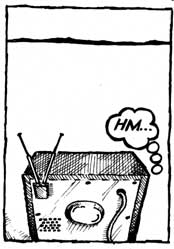
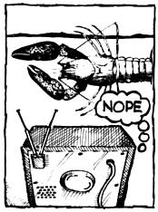
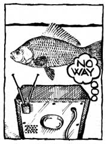
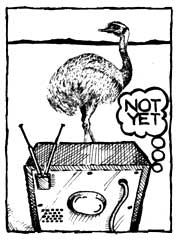
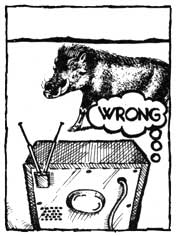
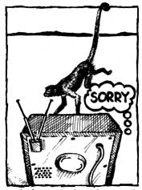
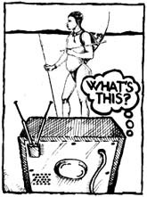
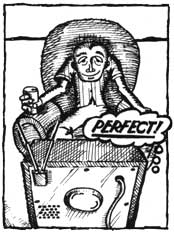
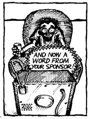

What's the matter with our modern, technologically based society anyway? Why isn't it more satisfying? Why do so many of us now feel that some vague something hounds us and diminishes us and makes us into something less than we should be? Most specifically of all, do we really use television-and so many other "benefits" and "tools" of our technological age-or does it use us? Jerry Mander (see photo) speaks the unspeakable and asks the unaskable in a remarkable new book that will be completely serialized in this magazine. The first of these installments follows.
From Four Arguments for the Elimination of Television by Jerry Mander, copyright © 1977 6y the author. Reprinted with the permission of William Morrow and Company, Inc. Available in paperback for 14.95 from any good bookstore or for $4.95 plus 95 cents shipping and handling from Mother's Bookshelf, P O. Box 70, Hendersonville, North Carolina 2739.
If this book has any basis in "authority," it lies in the fifteen years I worked as a public relations and advertising executive. During that time, I learned that it is possible to speak through media directly into people's heads and then, like some otherworldly magician, leave images inside that can cause people to do what they might otherwise never have thought to do.
At first I was amused by this power, then dazzled by it and fascinated with the minutiae of how it worked. Later, I tried to use mass media for what seemed worthwhile purposes, only to find it resistant and limited. I came to the conclusion that like other modern technologies which now surround our lives, advertising, television and most mass media predetermine their own ultimate use and effect. In the end, I became horrified by them, as I observed the aberrations which they inevitably create in the world.
In retrospect, I can see that an absurd little revolt against my family led me into advertising work. My parents wanted me to choose a profession or to take over my father's business. They felt that while advertising was already a lucrative field by the time I was seeking a way into it in the late 1950s, it was still very chancy for Jewish boys. They were certainly right about that. Directly out of the Wharton School of Business and then Columbia Graduate Business School, I was denied a job in a Park Avenue ad agency because "your hair is a little kinky: you might want to try Seventh Avenue." Seventh Avenue was what I was fleeing.
My parents carried the immigrants' fears. Security was their primary value: all else was secondary. Both of them had escaped pogroms in Eastern Europe. My father's career had followed the path familiar to so many New York immigrants. Lower East Side. Scant schooling. Street hustling. Hard work at anything to keep life together. Early marriage. Struggling out of poverty.
Curiously, success came to him during the Depression. He founded what later became Harry Mander and Company, a small service business to the garment industry, manufacturing pipings, waist bands, pocketing and collar canvas.
One of the reasons for my father's success during hard times was World War II. He was beyond draft age and so was free to do a successful trade in servicing the manufacture of military uniforms. After the war, the business grew in new directions as the economy spurted forward into an era of rapid growth. Nonetheless, I decided his business wasn't for me.
I had planned something much flashier for myself, something with greater glamour. It was snobbery, I suppose. By then, when I thought about my "career"-always a hot topic around our house-certain images would fly through my mind. Since so many of the images were from the ads of the period, the world of advertising seemed appropriate. There was something about that life-style, those big cars, the great white yachts, the polished people on them and the life of leisure and pleasure: The Dream.
It wasn't so much that I was especially interested in wealth or that I ached to have all the goodies that were being shown in the ads of the 1940s and 1950s. I didn't want to own the cars and yachts so much as I wanted to be like the people who did. More, I wanted to help create those images, to be around models, artists, photographers and writers whom I imagined to be the sleek and sophisticated people.
Despite some early setbacks, such as that Park Avenue experience, by 1966 much of my dream was realized. By then I had already concluded a successful career as head of a theatrical publicity agency and joined a celebrated San Francisco ad agency, which became Freeman, Mander and Gossage.
We concentrated on so-called class clients. Triumph, Land Rover and Rover cars. Eagle shirts. Paul Masson wines. KLH audio equipment. Scientific American. Advent Corporation. Alvin Duskin dresses. Random House publishing.
Ours was the most elegant office in town. I was commuting coast to coast weekly, taking five-day vacations in Tahiti, eating only in French restaurants, jetting to Europe for a few days' skiing.
At some point, not very long into this new career, I began to realize a kind of hollowness in myself. I caught myself smiling pasty smiles. I noticed that despite all this I was not having a good time.
I think I hit an emotional bottom in 1968 while cruising through the Dalmatian Straits, observing rocky cliffs, rolling seas, dazzling sky, and colors as bright as a desert.
Leaning on the deck rail, it struck me that there was a film between me and all of that. I could "see" the spectacular views. I knew they were spectacular. But the experience stopped at my eyes. I couldn't let it inside me. I felt nothing. Something had gone wrong with me. I remembered childhood moments when the mere sight of the sky or grass or trees would send waves of physical pleasure through me. Yet now on this deck, I felt dead. I had the impulse to repeat a phrase that was popular among friends of mine, "Nature is boring." What was terrifying even then was that I knew the problem was me, not nature. It wasn't that nature was boring. It was that nature had become irrelevant to me, absent from my life. Through mere lack of exposure and practice, I'd lost the ability to feel it, tune into it, or care about it. Life moved too fast for that now.
If one seeks critical moments to explain later acts, even the writing of books, then perhaps that was one such moment for me. It was clear that I had chosen a fraudulent path toward an equally fraudulent image of a very cold sort of "happiness." On balance, though, this Big Moment was probably less significant than a slowly evolving political awareness that it was no accident that I was feeling the way I was.
One of my partners in the ad agency was Howard Gossage, a genius of sorts who for years before he died in 1969 agonized about the absurdity of working in such a profession. "I'd hate to go to my grave remembered as the man who invented Beethoven sweatshirts or competitions for paper airplanes."
He loved to tell the story of the retired adman who once said to him: "I got out of this business when I woke up one day and didn't give a damn whether they sold more Quaker Oats than I sold Cream of Wheat. "
Gossage knew that there was more to the problem of advertising work than the way it emphasizes trivia. He would rage about the function itself, speaking of it as an invasion of privacy on an order far more extreme than the merely rude telephone solicitation, the door-todoor salesperson or even the computer file on your credit. It was an invasion of the mind, which altered behavior, altered people.
Advertising expresses a power relationship, Gossage said. One person, the advertiser, invades; millions absorb. And to what end? So that people will buy something! A deep, profound and disturbing act by the few against the many for a trivial purpose.
Still thrilled by the life I was living, such considerations did not at first seem all that significant. But the period was the 1960s.
While I was showing clients through my paneled offices, a lot of people only slightly younger than I were lying about on the floors of San Francisco auto showrooms, restaurants and hotels, demanding that these places hire blacks. Across the Bay in Berkeley, students were stopping classes to insist upon participation in university policies. Thousands of others were standing in front of trains carrying war materials for Vietnam or blocking entryways to draft induction centers.
Living in the Bay Area in those years, one could scarcely avoid reflection and even involvement in these goings-on. In my own case, the involvement soon became direct.
Since I had been a publicist, I knew many reporters and had a feeling for the nuances of influencing media. Because of that, and through friendship with a number of politically inclined actors in a satirical troupe called The Committee, I began to meet many protest leaders and found myself serving as a part-time media advisor for some of the demonstrations. Like many young lawyers I was part of what was called "the liberal support group."
I rarely went so far as actually to demonstrate, or even to visit a demonstration. Instead I hosted evening meetings in my office to discuss what was happening. The main concern was how to influence the press to carry stories emphasizing issues rather than disruptions or violence.
Here was a typical problem: A group of demonstrators would occupy a hotel lobby, demanding that blacks be hired at front-desk jobs, rather than bussing dishes in the coffee shop. Newspapers and television would run enormous stories about the demonstrations while editorially denouncing the tactics as "counterproductive to what might be worthy aims." The stories concentrated upon sloppylooking demonstrators, moments of violence, and lengthy statements by officials about law and order. In an entire week's news coverage there might be one passing reference to the fact that for forty previous years the hotel hadn't hired a black person in a visible job.
I had no theory of media in those days, and I don't think I was of great service as an advisor. Yet it was clear to me that these demonstrations were not counterproductive. They produced the first news stories ever on such subjects, leading slowly to reforms which might never have happened otherwise. Obviously the media needed awakening quite as much as everyone else did.
Another realization was dawning upon me. As I commuted mentally between the interests of the demonstrators I talked to in the evenings and the interests of my commercial clients, I grew more and more impressed with the effect that the mere possession of money has upon the kind of information that is dispensed through the media.
My evening clients, speaking of social issues, needed to organize hundreds of people into confrontative acts which could get them extensive, if often unfavorable, coverage. Or, if they chose less confrontative routes, they could spend weeks of time and all their hardwon nickels and dimes to organize press information programs which would, at their most successful, net them a few inches in the back of the newspaper.
Meanwhile, any of my daytime clients, speaking for commercial purposes, could and did buy advertising space and time worth tens of thousands of dollars. Then they would do it again the following week.
I already knew that, in America, all advertisers spent more than $25 billion a year to disseminate their information. Now, however, I was beginning to pay attention to an obvious, yet little noticed, aspect of this situation. Virtually all of the $25 billion was being spent by people who already had a great deal of money. These were the only people who could afford to pay $30,000 for one page of advertising in Time ($54,000 by 1977) or $50,000 for one minute of prime television time ($125,000 by 1977). Ordinary people and small businesses, even those which are successful by most standards, can rarely afford any advertising beyond the want ads, or a small local retail display. Only the very rich buy mass national advertising. And they do this to become richer. What other motive could they possibly have?
A.J. Liebling once said, "Freedom of the press is limited to those who own one." I was learning that access to the press was similarly distorted by the possession of wealth. People with money had a 25-billion-to-nearly-zero advantage over people without money. The rich could simply buy access to the public mind while the not-rich had to seek more circuitous routes.
Twenty-five billion dollars is nearly as much as the whole country spends on higher education every year. I began to realize that a distortion was taking place in the quality and kind of information offered to the public. To a larger and larger extent, people's minds were being occupied by information of a purely commercial nature. As an advertising executive, I was instrumental in furthering this distortion.
The ecology movement pushed me over the edge. Our agency was hired first by the Sierra Club and then by Friends of the Earth and other organizations. Unlike most other do-good groups, these at least had a little money to buy an occasional one-shot ad on some critical issue. (During the early 1970s, all environmental groups together spent about $500,000 per year in advertising in order to offset an average of about $3 billion in corporate expenditures on the same subjects. This ratio was relatively small, only 6,000 to 1, which may help explain the early success of the environmental movement.)
I found myself writing ads about keeping dams out of Grand Canyon, halting the overdevelopment of cities, stopping the development of SSTs, and urging people to stop buying and wearing furs.
The ads attacked the prevailing lifestyle of the country, which certainly included my own. They spoke of an inevitable conflict between corporate growth and the health of the planet. They encouraged a habit of mind which could grasp the interrelationships between all natural systems, including humans. They described a growing environmental destruction which reflected itself in individual lives as well as in economic policies.
As I wrote these ads and thought about them, it got harder and harder to separate my new perspective from an awareness that it was in conflict with our corporate work. On Tuesday, I was writing about the impact cars and other technologies had upon the environment, and on Thursday I was promoting the sale of cars.
The crunch came one day in 1969 when a young Wall Street Journal reporter named Henry Weinstein called about doing a story on our agency's public-service work. By that time we had gained public attention for having invented a new style of advocacy advertising. Our ads were characterized by coupons urging changes in policy. The coupons could be torn out by readers and sent to corporations and government agencies. They produced enormous volumes of mail on conservation issues that until then had been considered the province of bird watchers and little old ladies in tennis shoes.
The ads had not only affected policy, they catalyzed and organized the public, because they allowed a new level of involvement. By mailing them, people became more committed to the issue. For once they were doing something more than feeling bad. A number of senators and congressmen publicly gave the ads credit for determining the outcome of several issues, and in The New Advertising Robert Glatzer went so far as to credit them with "starting the whole ecology boom."
Weinstein told us that the Journal was interested in the way we had developed this technique. However, when the story appeared on the front page, we learned he was a cagier reporter than we'd realized. While praising our work, he went to considerable lengths to reveal our misgivings about our conflicting roles. He cited my own anxiety at doing ads for an auto account, British Leyland Motors ( Rover, Land Rover, Triumph), at a time that I was making speeches that said automobiles were at the heart of so many problems.
Leyland didn't like this. Within two hours of the story's appearance we were fired. The next day's Journal carried the headline:
AD MAN NEED WORRY NO MORE ABOUT AUTO ACCOUNT
I could describe fifty less spectacular incidents similar to this one involving struggles with clients over corporate policies that I was beginning to see as antithetical to simple rules of human well being, or justice or planetary survival. They finally added up to a single generalization: Corporations are inherently uninterested in considerations aside from the commercial.
We began to feel that our balancing act was draining us personally. At last we saw that it was doomed to fail. Maintaining commercial accounts in the hope of using the income from them to finance other projects about which we cared more deeply was not going to work out.
We soon decided to dissolve the agency, and I began to work with a number of other people to establish a foundation-funded, non-profit advertising and public relations office. The first in the country, it was called Public Interest Communications and it was devoted solely to working for community. organizations which are largely excluded from media. The project was launched in 1972 with a grant from the Stern Fund. It succeeded for a little while in performing useful services for ecologists and farm workers, consumer groups, Indian rights activists and peace groups. But keeping it alive proved difficult. The problems were much like those we had faced at Freeman, Mander and Gossage.
Whereas I had formerly spent a major part of my day keeping the agency going by caring for the needs of corporations, at Public Interest Communications we spent a majority of our time seeking grants from the few foundations interested in media reform.
Even worse, there was a feeling that everything we were doing was ineffective. A nameless juggernaut was advancing unretarded. We felt as if we were throwing snowballs at tanks. Through enormous concentrated effort, we might stop a dam on one river; meanwhile, a dozen other dams would be built. If the production of an American SST was halted, European SSTs would land at American airports. If an energy crisis developed, rather than signaling the limits of planetary resources, or the absurdity of the way we lived, it produced new drives toward nuclear power and more strip mines.
We were not the only ones with this problem. The Vietnam War was halted, but the arms race and military aid to rightwing regimes advanced. Nixon was thrown out, but government reform came down to a lame Senate ethics bill. Unemployment was growing and welfare lines with it, yet in the end economic reform measures always seemed to hurt the very segments of the population they purported to help while the rich got richer.
One young activist told me, "We seem to be running on a treadmill; as we advance, we are always in the same place."
Every issue had to be fought as though it were the first one. People seemed unable to connect one issue to another, to find common threads in, say, a struggle against high-rise office buildings and nuclear power plants and colonial wars. Specific victories were possible, but overall understanding of the forces that were moving society seemed to be diminishing.
People's minds seemed to be running in dogged, one-dimensional channels which reminded me of the freeways, office buildings and suburbs that were the physical manifestations of the same period. Could one be affecting the other? Could life within these new forms of physical confinement produce mental confinement? For the first time, I began to think this might be possible.
We were told we had the highest literacy rate in the history of the world and the best-informed population, and yet the information seemed to be less well processed. As mass media grew until it too became a kind of environment, I began to think that it might not really be contributing to any pool of useful knowledge.
I was confused by this emerging perception and at first took a traditional view of what needed to be done. It meant we all had to work harder to reach more people with every message. Since in any specific struggle we might be outspent by several hundred times, we needed to be more clever, more creative.
That led me to think that the problem was too much information. The population was being inundated with conflicting versions of increasingly complex events. People were giving up on understanding anything. The glut of information was dulling awareness, not aiding it. Overload. It encouraged passivity, not involvement.
Then I began seeing some amazing statistics about television.
The first really shocking burst of figures appeared in newspapers in the early 1970s.
It was reported that in the generation since 1945, 99 percent of the homes in the country had acquired at least one television set. On an average evening, more than 80 million people would be watching television. Thirty million of these would be watching the same program. In special instances, 100 million people would be watching the same program at the same time.
The average household had the set going more than six hours a day. If there was a child, the average was more than eight hours. The average person was watching for nearly four hours daily. And so, allowing eight hours for sleep and eight hours for work, roughly half of the adult nonsleeping, nonworking time was spent watching television. Considering that these were average figures, they meant that half of the people in this country were watching television even more than that.
As these numbers sank in, I realized that there had been a strange change in the way people received information, and even more in the way they were experiencing and understanding the world. In one generation, out of hundreds of thousands in human evolution, America had become the first culture to have substituted secondary, mediated versions of experience for direct experience of the world. Interpretations and representations of the world were being accepted as experience, and the difference between the two was obscure to most of us.
I heard many people say, "Television is great; there are so many things on TV that we'd never otherwise experience." People were seeing television images of Borneo forests, European ballets, varieties of family life, distant police actions, current events, or recreations of historical crises, and they were believing themselves to be experiencing these places, people and events. Yet the television image of the Borneo forest or the news or historical events was surely not the experience of them and not to be relied upon to the same extent. It was only the experience of sitting in a darkened room, staring at flickering light, ingesting images which had been edited, cut, rearranged, sped up, slowed down, and confined in hundreds of ways. Were people aware of the difference?
Despite my work in advertising, I had never yet made any thorough investigation of the power of images themselves. I did not know how people's minds related to imagery, whether they could separate one kind of image-that which is directly experienced-from another kind, which has been processed and altered, and which arrives out of context. It was not clear whether people ascribed the same credibility to both, either consciously or subconsciously, and how this changed the quality of their understanding.
Nonetheless, it was obvious to me from my own work that something was going wrong with what people were understanding and what they weren't. A new muddiness of mind was developing. People's patterns of discernment, discrimination and understanding were taking a dive. They didn't seem able to make distinctions between information which was pre-processed and then filtered through a machine, and that which came to them whole, by actual experience. Perhaps seeing was believing in a way that overrode the conscious mind. At the same time, no one was even writing about how the machine changed the information. Very few people understood it. Only advertisers studied the way the machine altered data, because it was the basic work of advertising to alter and confine information in advance so that it would have the desired effect. Hundreds of thousands of dollars were spent discovering how to do this.
Slowly I began to see how the ubiquitousness of television, combined with a general failure to understand what it did to information, might affect the political work we were doing. If people were believing that an image of nature was equal to or even similar to the experience of nature, and were therefore satisfied enough with the image that they did not seek out the real experience, then nature was in a lot bigger trouble than anyone realized. Or, if people believed that images of historical events or news events were equal to the events or were even close approximations of them, then historical reality was in big trouble. As television became the major mental and physical experiential field for most of the people in the country, as it began to merge with environment, the confusion of television information with a wider, direct mode of experience was advancing rapidly.
Because so many of us were confusing television experience with direct experience of the world, we were not noticing that experience itself was being unified to the single behavior of watching television. Switching from channel to channel, believing that a sports program was a significantly different experience from a police program or news of an African war, all 80 million viewers were sitting separately in dark rooms engaged in exactly the same activity at the same time: watching television.
It was as if the whole nation had gathered at a gigantic three-ring circus. Those who watched the bicycle act believed their experience was different from that of those who watched the gorillas or the flame eater, but everyone was at the circus. Worse, as we all watched from our separate living rooms, it was as if we sat in isolation booths, unable to exchange any responses about what we were all going through together. Everybody was engaged in the same act at the same time, but we were doing it alone.
What a bizarre situation!
It was suddenly possible for an entire nation of 200 million people to be spoken to as individuals, one to one, the television set to the person or family, all at once. I was chilled at the thought, realizing that these conditions of television viewing-confusion, unification, isolation, especially when combined with passivity and what I later learned of the effects of implanted imagery-were ideal preconditions for the imposition of autocracy.
At that time, however, my own definitions of the nature of autocracy were confined, like those of most Americans, to the model of single, charismatic leaders. Hitler. Stalin. Chiang. Franco. Mao. Differences among these were submerged in the model of the powerful leader, enforcing his will, ruling absolutely. That was autocracy. Television seemed to be the perfect instrument to help bring on that kind of control.
My fears were encouraged one day in 1971, as I sat around my office reading the morning New York Times and noted a small item. It concerned a Pentagon proposal to President Nixon that an electronic gadget be attached to every television set in the country. Capable of being activated directly by the President, it would switch on every set in the country at once. It was to be used, of course, only in case of extreme national emergency. My mind flew into a paranoid pattern:
It's 4:00 a.m. Two hundred million people are awakened by the national anthem. Where is it coming from? What's that light over there? It's the TV set. There's the President!
"My fellow Americans, it is with extreme regret that I awaken you from your well-earned rest. Yet we are all met with a crisis so grave as to require it.
"An exhaustive investigation by your law enforcement agencies has uncovered a massive conspiracy to destroy our democracy, a conspiracy which enjoys at least the tacit support of thousands of students, journalists, attorneys and even certain judges and elected officials.
"As your Commander in Chief, I have ordered the immediate arrest of the terrorists and the individuals in their support groups, whatever their official rank or prestige.
"I have also invoked the implied powers of the President to govern in such times of grave crises, free of the usual encumbrances.
"I am hopeful and confident that these emergency measures, taken to safeguard our democracy, will be shortlived.
"Thank you, Godspeed and good night. "
The set switches off by itself. Was that a dream? Back to sleep.
A few months later I saw a follow-up story in the Times that said the Pentagon proposal had been scrapped. Apparently the administration felt people might "misinterpret the intentions" of such a project.
In retrospect, I know that my scenario was fantastic and unsophisticated, deriving from my simple-minded notion that autocratic interventions can take place only through a single leader or a coup. But whatever the intentions of the Pentagon and President Nikon, who has since asserted that Presidents may create their own laws, it was clear that the existence of the technology itself had created a new potential.
We can all be spoken to at the same time, night or day, from a centralized information source. In fact, we are. Every day, a handful of people speak, the rest listen. Brutal and heavy-handed means of confining awareness, experience and behavior may actually be a thing of the past. In many ways, television makes the military coup and mass arrests of my imagination unnecessary. We can begin to grasp the irrelevance of such acts now that a more subtle coup is underway.
It takes place directly inside the minds, perceptions and living patterns of individual people. A technology makes it possible, perhaps inevitable, while dulling all awareness that it is happening.
Marshall McLuhan did not help us very much in our early efforts to understand television. By the time he was popular in the mid-1960s we had already been through the Army-McCarthy hearings, the Kennedy-Nixon debates and then the Kennedy funeral which had plugged eighty million people into the same experience at the same time.
None of these events had caused the slightest ripple of alarm, but rather produced a rush to praise our new electronic unity. The mass viewing of the funeral, particularly, was hailed in religious terms, like some kind of breakthrough in the evolution of consciousness: everybody unified in grief, transcending the conditions of their individual lives. Human ingenuity had now advanced to the point where technology could produce a nationwide, one-mind experience, previously thought to reside only in the realm of the mystic.
McLuhan, who saw so much, could have helped us see through that crap. Instead, because of his celebration of our electronic connection, our planetarytribal village, he effectively encouraged support for the technomystical-unification theme.
His words entered the arena of talk show patter and wordplay. "Hot and cool." "The medium is the message." People struggled to find concrete meaning in these phrases. They became the basis of hundreds of conferences and thousands of cocktail party debates. Most people were satisfied that they understood something if they grasped that, because of television, we were now vibrating together to the same electronic drumbeat. Joyful at what looked like a new and positive unity, we failed to perceive, nor did McLuhan help us become conscious of three critical facts, [1] it was only one drumbeat, [2] this drum could be played only by a handful of players, [3] the identity of the players was determined by the technology itself.
McLuhan is not a person who presents his arguments in political terms, so perhaps he can be forgiven for failing to drop the other shoe, to tell us what should have been the most urgent meaning of the medium. Perhaps he was as dazzled as the rest of us mortals, suffering the same reaction to this new technology as the deer staring at the headlights of the oncoming car. Like the religious oneminders before him, he drew no distinctions between one sort of unification and another, leaving the rest of us to sort it out. But we didn't.
At that moment, anyone interested in social, psychological, educational or political processes should have dropped everything and begun intensive study of the effects of this new phenomenon which was capable of unifying everyone within a new, reconstructed experience. Instead, all factions saw it opportunistically.
Everyone with a message to deliver-government, corporations, the military, community groups, gurus, teachers and psychologists-began drooling at the possibility of gaining access to this incredible machine that could put pictures into millions of people's heads at once. It was clear that as life increasingly moved away from the streets, community centers and marketplaces, one message on television-thirty seconds on the Cronkite news-was worth more than a thousand hours of organizing or whistle-stop political touring or hundreds of newspaper ads.
A war began for control of the machine and its use. All competing factions shared the idea that if they could gain access to it, television could communicate their message as well as any other, that television technology was only a neutral instrument. Intent on changing other people's minds, they did not consider that television might change those who used it. All joined in an implicit conspiracy to increase the use of television.
Advancing From the Sixties to the Fifties
My own feelings about the effects of television began to progress beyond the Nixon-Pentagon sort of fantasy as I observed its effects on community groups and Movement people who, believing in its neutrality, sought to use it.
I watched and participated as they changed their organizations' commitments from community organizing, legal reform processes or other forms of evolutionary change to focus upon television. Educational work was sacrificed to public relations work. The goal became less to communicate with individuals, governments or communities than to influence media. Actions began to be chosen less for their educational value or political content than for their ability to attract television cameras. Dealing directly with bureaucracies or corporations was frustrating and fruitless. Dealing with communities was slow. Everyone spoke of immediate victory.
A hierarchy of press-oriented actions developed. Press conferences got coverage once. Rallies brought more attention than press conferences. Marches more than rallies. Sit-ins more than marches. Violence more than sit-ins.
A theory evolved: Accelerate the drama of each successive action to maintain the same level of coverage. Television somehow demanded that. As the stakes rose, the pressure mounted to create ever more outrageous actions.
The movements of the 1960s had become totally media based by the 1970s. The most radical elements were up to the challenges of the theory of accelerated action. They "advanced" to kidnappings, hijackings, bombings. The sole purpose of these actions was often no more than media exposure.
Sensing that television was now the country's main transmitter of reality, individuals began to take personal action to affect it.
A young Chicano man hijacked a plane to obtain a five-minute TV interview about the ill treatment of his people.
A young man in Sacramento took some bank employees hostage so that a TV news team would report that neither he nor his father could get a job.
Lynette Fromme shot at President Ford, she said, so the media would warn big business to cease destroying the planet.
The SLA kidnapping of newspaper heiress Patricia Hearst signaled the final stage of abstraction. It exhibited a warped genius in that it allowed the SLA to demand successfully that their communiques would be published unedited.
However, because it owed its whole life to the media, existing nowhere else, the SLA was subject to cancellation at any time, and it was canceled most thoroughly, like a series with slipping ratings getting the ax.
Less radical elements did not suffer the SLA's dramatic demise, but the cycle of fast rise/fast fall was similar for many. Ralph Nader bloomed in the media and then became tiresome. The ecology movement, fitting the holocaust model of TV news, burst upon the scene and then declined. Watergate excited expectations of government reform, but then it was old news.
Once the U.S. was out of Vietnam, the once hot antiwar movement was off the tube. A few years later Jimmy Carter was able to appoint some of the architects of the war to high positions in government. It was as though the war hadn't happened, or was merely another action-packed drama, replaced by next season's schedule, with the same actors playing new, equally believable, roles.
Meanwhile, those seriously committed Movement people of the 1960s who were not willing to go on to terrorism began dropping out, moving to farms in Vermont and Oregon. Or, and I know many who have done this, they got jobs writing television serials. They justified this with the explanation that they were still reaching "the people" with an occasional revolutionary message, fitted ingeniously into the dialogue.
"The people," however, were as they had been for years, sitting home in their living rooms, staring at blue light, their minds filled with TV images. One movement became the same as the next one; one media action merged with the fictional program that followed; one revolutionary line was erased by the next commercial, leading to a new level of withdrawal, unconcern and stasis. In the end, the sixties were revealed as the flash of light before the bulb goes out. The seventies became an advanced version of the fifties. And as we shall see in Argument Two, it was all made inevitable by the thirties.
The changes wrought upon movements by the emergence of ,television were similar to the changes in traditional political process.
Richard Nixon, probably the first major public figure to understand television deeply, realized that four hours of TV debate with Kennedy had turned probable victory into slim defeat. He understood that TV appearances were more important than personal ones. By the time he ran again, he had revised his image. He became the "new Nixon."
Even though many people understood that his change was only cosmetic, he won. This confirmed for me the idea that something in the nature of television imagery allows form to supersede content. Once elected, Nixon made his first appointments-Ziegier and Haldeman-from advertising, the field that pioneered conveying pseudocontent in place of substance.
By his third campaign, Nixon appeared only on television; never in pubtic. McGovern, meanwhile, made the mistake of trying to deliver "content" through a medium predisposed to resist it.
Having used the media so well, Nixon developed a fatal arrogance about it. He and Agnew may have been right in claiming that their various transgressions were nothing special in American political history. But like the SLA, they forgot that they themselves were media illusions. The gravest mistake that can be made by a media creature is to assault the machine. The machine doesn't care about its fantasies. A new one will do. Bringing Nixon down was just as good for ratings as supporting him. Better. More action. The only goals of the machine are to continue to be the real power behind the throne, no matter who is king, and to remain the primary factor in all public perception. Television has the power to create presidents, and it has the power to destroy them.
Lyndon Johnson apparently also understood this power. So fiercely did he desire to dominate television that he kept three sets going in his offices at all times. He never succeeded in controlling mass media, but he did have a few dazzling moments. For example, the Gulf of Tonkin incident never happened, but it was carried as legitimate by every news outlet. That convinced both Congress and the public and gave Johnson the approval he needed to escalate the Vietnam War.
This event was later exposed as only one of the many non-events pushed through the media to sell us that war. It occurred to me that the very fact that this could be done at all-fictional news about fictional military events expanding faraway wars that no one watching the images could observe firsthand-was cause for serious alarm about the power of the media to pursue fictitious realities.
Johnson was finally done in by his personal style. It turned out to be better television to caricature his way of speaking and his bawdy behavior, to make him a cartoon or folk character than to present him in a favorable light.
By the 1976 campaign, politicians had to become successful media artists or fail politically. That campaign was unique in that it displayed no content at all, only form. It was a contest between images and advertising stereotypes.
We were offered the charismatic Western hero, charming and brave though an underdog: Reagan. The truth-saying revivalist in corporate packaging: Carter. The guru, speaking aphorisms, standing for a new, albeit aggressive, consciousness like David Carradine's Kung Fu hero: Brown. The old reliable, trusted, venerable warrior in the image of Cronkite: Humphrey. And the President, a television image merely by virtue of being President, investing himself with an apparent authority based solely on that image: Ford.
All of the candidates found their votegetting power in their images and left content out as confusing and irrelevant. They were correct to do this. As we shall see, a campaign run on content could not possibly work on television.
Carter learned the lesson well. In May 1977, The New York Times released an entertaining Carter memo which showed that his organization consciously formalized his reelection plans to emphasize style over content. Carter already uses television as it has never been used before, delivering his homespun appeals directly to the people at home in their living rooms before dealing with Congress or journalists. His talents for leadership, already sharpened from the evangelist model he started with, are growing with his knowledge of technology.
* * *
During the years that television was coming into its own as the central factor in American personal and political life, its basic nature and the effects it had on human beings and their institutions were rarely examined. The problems that people did discuss were concentrated in three main areas: commercialism, access and programming.
Thinking that television could be reformed so that its potential for good would be realized, media reformers sought new laws, government control and regulatory policies. I was among the media workers who fought to limit the domination of advertisers and the effect of advertising on network policies. We worked to offset the emphasis on ratings, an emphasis detrimental to the needs of the public. Many of us fought for access channels so community groups could offer an occasional alternative to the consumer society. We hoped that in this way all segments of society, and all points of view, would gain access to the public mind, fulfilling what looked like a democratic potential of the medium.
Meanwhile, others fought on other fronts. Psychologists, parents' groups and educators lobbied against the dominance of sensational, superficial, irrelevant and violent programs. They sought programs with "prosocial values." They especially wanted new emphasis on humanistic and educational shows for children. These groups saw no reason why such values as cooperation, loving and caring could not be just as appropriate for television programming as were violence and competition.
It went on and on. Historians lobbied for more documentaries, believing that television had no greater inherent limits to its ability to present historical truth than the media that had preceded it. They succeeded in getting legislation requiring that TV networks permanently store their news and documentary footage. Now we can look to a future in which the present era will be understood in terms of the television treatment of it.
Ecologists assumed television could be a potentially useful tool in expanding knowledge of how our species interacts with natural forces.
Political radicals believed television could stimulate deeper understanding of complex issues.
Indian groups believed it was possible to build sensitivity to their culture and philosophy through TV. They shared this belief with other groups that sought civil rights-blacks, homosexuals, women's groups and so on.
At some point in the early 1970s, I began to be at odds with the assumption that television was the ideal medium for all these groups. I noticed that, unlike commercial advertising messages, many of these alternative views somehow didn't work on television. They lost body, became "flat." Aside from this, it was clear that while the organizations were focusing all their communications efforts through television, they themselves were being negatively affected.
One day in 1971, I raised the point with two different groups. One was seeking the educational reform of colleges, and the other was lobbying for new neighborhood zoning laws.
I told them that I felt their intense desire to attract television coverage was damaging their organizations and that they were failing to get their message through anyway. They were losing their roots, their grounding. I wondered aloud if more wasn't being lost than gained.
The answer was, "Listen, everybody's watching television. We can reach everyone if we handle things the right way."
I pointed out that when a message is squeezed through a twenty-second news spot, so much can be lost that what is left will fail to move anyone enough to make them turn off the set and actually do something. Meanwhile, the viewers will believe that they have learned everything they need to know on that subject and will be bored the next time they hear it.
Each group responded the same way. They brought up the civil rights and antiwar movements. These surely "worked" on television, so what was I trying to say? This stopped the discussion both times.
Only later did I understand that both the civil rights and antiwar movements were exceptions which proved the point. Adopting confrontational tactics in an escalating cycle of action and reaction, they got extensive coverage and became the model for all movements seeking rapid success.
But should all movements use such tactics to get their time on the tube? Were the street demonstrations and violent clashes that produced television coverage for some movements appropriate for neighborhood or educational reformers? For ecologists? For consumer groups? The handicapped? Perhaps so. They certainly brought the cameras out. But what became of their messages when groups did this? What became of the organizations? Finally, what did this suggest about the so-called neutral, or even benign, nature of the medium? Did this not mean that television, in effect, was determining the style and content (or lack thereof) of all political action, that movements were becoming derivative of the needs of the technology?
I didn't know the answer to these questions, and I realized that no one else seemed to be even addressing them.
But what really drove me onward to investigate television was an experience I had while working with the Hopi Indians. I think it will be worth describing this experience in its full detail because its complexity is part of its point.
It was during the summer of 1972, just as I was closing down Freeman, Mander and Gossage, that I was asked to help some traditional Hopi elders who were fighting a strip mine on their reservation at Black Mesa, Arizona.
Black Mesa was sacred ground to the traditional Hopis. To rip it open and remove its contents was a violation of their most ancient religious tenets.
The problem at Black Mesa was typical of what has happened on many Indian reservations. The traditional Hopi Indians had always refused to deal with the Bureau of Indian Affairs, which functions as overlord on all reservations, and so they had been pushed aside. In their stead, the Bureau had created a tribal council composed mainly of Indians who no longer lived on the reservation. The tribal council members were not really even Hopis anymore; they were Mormons. Most had moved to Salt Lake City, had businesses there, and returned to the reservation only for their council meetings. They agreed with the BIA that their job was to sell off Indian resources and land at the best possible price, thereby helping Indian people turn into Americans more quickly. The sale of strip mine rights to a coal company was simply part of the logic of this process.
The traditional "government" which had preceded the tribal council was not really a government at all. It was a kind of informal grouping of religious leaders from the dozens of independent clans which together formed the Hopis. They did not sit in a hierarchical arrangement over the rest of the Hopis; they functioned more as teachers or as guides to the religious conceptions.
The religion itself was based on what we would now think of as ecological laws of balance. The land was alive, the source of life. To rip it up and ship away its contents was so outrageous as to be unthinkable. To the MormonAmerican Hopis, however, strip mines were indeed thinkable.
Eventually the traditionals realized that while they were ignoring the BIA and the tribal council, the land was being destroyed and the religion with it. The elders decided to fight. To fight they needed to learn white legal systems, white tactics, and white means of manipulating media. To learn these, they had to restructure their minds and conceptions. And so to fight the enemy, the traditional Hopis began the process of self-destroying what remained of their own Indianness.
At some point television news discovered the struggle. Network crews were flown out from Hollywood. They shot images of the deserts, images of the fifty-foot cranes, images of the older men and women standing picturesquely near their kivas. Following the network news guidelines for "good television" they sought a "balanced report." They interviewed members of the Bureau of Indian Affairs, members of the tribal council, and representatives of the coal company, all of whom discussed the issues in terms of contracts, rights, jobs and energy.
These opinions were juxtaposed with shots of some of the elderly Hopis, standing in the desert, speaking of the Great Spirit being represented in all things.
The newsmen added some footage of Hopi sacred dances and some images of the Hopi's most spiritual place, the kiva. The elders limited how far the reporters could go into their religion. It is against the Hopi religion, for example, to allow ceremonies and "power objects" to be photographed. The elders felt that to photograph these things "steals their aura." (As we will see in Argument Four, this may not be a silly notion.) They also felt that exposing their ceremonies to people who have not been trained to understand them-a process that takes Hopi apprentices many years-would undermine the meaning of the ceremonies.
A week later, I watched the report on television. It got four minutes on the evening news. It was an earnest report. The reporters revealed that their sympathies lay with the traditionals, but they had created-as they had no choice but to do-a formula story: Progress vs. Tradition. Forty million Americans obtained their first, and perhaps only, views of the Hopi people in the form of images of cranes juxtaposed with Indians in suits and ties, responsible government officials concerned about jobs, and a lot of old savage-looking types in funny clothes, talking about a religion which says that to dig up the land is dangerous for the survival of every creature on the planet. These forty million viewers also saw a white, modishly dressed TV newsman explain the crosscurrents in the struggle, and plaintively ask whether something of an earlier culture couldn't be permitted to remain. "From Black Mesa, Arizona, this is John Doe reporting." This was followed by a commercial for Pacific Gas and Electric on the growing energy crisis and the need to tap all energy resources. The next story on the news was about a bank robbery.
I turned off the television set and wondered what effect this story had had on viewers. Did it help the Hopis? Would any good come from it?
It was certain that the old people had not come through as well as the business men, the government officials and the reporter's objective, practical analysis. The old people just seemed tragic, and a little silly, if poignant. They were attempting to convey something subtle, complex, foreign and ancient through a medium which didn't seem able to handle any of that and which is better suited to objective data, conflict and fast, packaged information.
I wondered, had I been shooting that story myself for the evening news, if I could have done a better job of it. Could I have been able to explain to white America that to care about what was going on down there they would have to have cared about the Hopi perception of reality; the Hopi mind and its integration with natural forces? Viewers would have had to care about the landscape, the spaces, the time, the wind, the color, the feel of the land and the sacred places and things. How could I have conveyed something through the medium so that anyone would have cared, when everyone was sitting at home in darkened living rooms, watching television? It was time travel that needed to be conveyed. How could I have carried a viewer from home through time and space to another reality which can only make sense if experienced directly? I decided that my report would have been no better than this Hollywood crew's had been. In fact, theirs was probably as good as could have been done within the limits of the medium. But in the end, the Hopis were hurt, not helped. Their struggle was revealed, perhaps, but they themselves were further fixed into the model of artifact. The medium could not be stretched to encompass their message.
On the other hand, what if I had four minutes, or even one minute, to convey the essence of a product? A car? A stereo set? A toy? Could I accomplish that efficiently?
I certainly could. It suddenly became obvious to me that a product is a lot easier to get across on television than a desert or a cultural mindset.
Understanding Indian ways enough to care about them requires understanding a variety of dimensions of nuance and philosophy. You don't need any of that to understand a product, you do not have problems of subtlety, detail, time and space, historical context or organic form. Products are inherently communicable on television because of their static quality, sharp, clear, highly visible lines, and because they carry no informational meaning beyond what they themselves are. They contain no life at all and are therefore not capable of dimension. Nothing works better as telecommunication than images of products.
Might television itself have no higher purpose?
Most Americans, whether on the political left, center, or right, will argue that technology is neutral, that any technology is merely a benign instrument, a tool, and depending upon the hands into which it falls, it may be used one way or another. There is nothing that prevents a technology from being used well or badly; nothing intrinsic in the technology itself or the circumstances of its emergence which can predetermine its use, its control or its effects upon individual human lives or the social and political forms around us.
The argument goes that television is merely a window or a conduit through which any perception, any argument or reality may pass. It therefore has the potential to be enlightening to people who watch it and is potentially useful to democratic processes.
It will be the central point of this book that these assumptions about television, as about other technologies, are totally wrong.
If you once accept the principle of an army-a collection of military technologies and people to run them-all gathered together for the purpose of fighting, overpowering, killing and winning, then it is obvious that the supervisors of armies will be the sort of people who desire to fight, overpower, kill and win, and who are also good at these assignments: generals. The fact of generals, then, is predictable by the creation of armies. The kinds of generals are also predetermined. Humanistic, loving, pacifistic generals, though they may exist from time to time, are extremely rare in armies. It is useless to advocate that we have more of them.
If you accept the existence of automobiles, you also accept the existence of roads laid upon the landscape, oil to run the cars, and huge institutions to find the oil, pump it and distribute it. In addition you accept a sped-up style of life and the movement of humans through the terrain at speeds that make it impossible to pay attention to whatever is growing there. Humans who use cars sit in fixed positions for long hours following a narrow strip of gray pavement, with eyes fixed forward, engaged in the task of driving. As long as they are driving, they are living within what we might call "roadform." Slowly they evolve into car-people. McLuhan told us that cars "extended" the human feet, but he put it the wrong way. Cars replaced human feet.
If you accept nuclear power plants, you also accept a techno-scientific-industrial-military elite. Without these people in charge, you could not have nuclear power. You and I getting together with a few friends could not make use of nuclear power. We could not build such a plant, nor could we make personal use of its output, nor handle or store the radioactive waste products which remain dangerous to life for thousands of years. The wastes, in turn, determine that future societies will have to maintain a technological capacity to deal with the problem, and the military capability to protect the wastes. So the existence of the technology determines many aspects of the society.
If you accept mass production, you accept that a small number of people will supervise the daily existence of a much larger number of people. You accept that human beings will spend long hours, every day, engaged in repetitive work, while suppressing any desires for experience or activity beyond this work. The workers' behavior becomes subject to the machine. With mass production, you also accept that huge numbers of identical items will need to be efficiently distributed to huge numbers of people and that institutions such as advertising will arise to do this. One technological process cannot exist without the other, creating symbiotic relationships among technologies themselves.
If you accept the existence of advertising, you accept a system designed to persuade and to dominate minds by interfering in people's thinking patterns. You also accept that the system will be used by the sorts of people who like to influence people and are good at it. No person who did not wish to dominate others would choose to use advertising, or choosing it, succeed in it. So the basic nature of advertising and all technologies created to serve it will be consistent with this purpose, will encourage this behavior in society, and will tend to push social evolution in this direction.
In all of these instances, the basic form of the institution and the technology determines its interaction with the world, the way it will be used, the kind of people who use it, and to what ends.
And so it is with television.
Far from being "neutral," television itself predetermines who shall use it, how they will use it, what effects it will have on individual lives, and, if it continues to be widely used, what sorts of political forms will inevitably emerge. These will be the subjects taken up in the main body of this book.
Before going on with the four arguments, I think it will be useful to remark that they involve a deliberate change in pace from what you have read till now. This introduction was written to move along the surface from point to point fairly quickly, a la television-time, as it were. Its purpose was to give you a rapid summary of my own changing perspectives on the medium, up to the moment I began to feel that there was much more, to the problem than I understood, leading me temporarily to quit all other activities and delve further into television.
It was only after a long while and many half-steps of change in viewpoint that I finally faced the fact that television is not reformable, that it must be gotten rid of totally if our society is to return to something like sane and democratic functioning. So, to argue that case, especially considering that it involves a technology accepted as readily and utterly as electric light itself, is not something that ought to be done rapidly or lightly. Nor can such a case be confined to the technology itself, as if it existed aside from a context.
What follows, therefore, proceeds in what might be called book-time through four dimensions of television's role and impact. Each of them can be observed separately from the others, but they also intertwine and overlap each other.
The first argument is theoretical and environmental. It attempts to set the framework by which we can understand television's place in modern society. Yet, this argument is not about television itself. In fact, television will be mentioned only occasionally. It is about a process, already long underway, which has successfully redirected and confined human experience and therefore knowledge and perceived reality. We have all been moved into such a narrow and deprived channel of experience that a dangerous instrument like television can come along and seem useful, interesting, sane and worthwhile at the same time it further boxes people into a physical and mental condition appropriate for the emergence of autocratic control.
The second argument concerns the emergence of the controllers. That television would be used and expanded by the present powers-that-be was inevitable, and should have been predictable at the outset. The technology permits no other controllers.
The third argument concerns the effects of television upon individual human bodies and minds, effects which fit the purposes of the people who control the medium.
The fourth argument demonstrates that television has no democratic potential. The technology itself places absolute limits on what may pass through it. The medium, in effect, chooses its own content from a very narrow field of possibilities. The effect is to drastically confine all human understanding within a rigid channel.
What binds the four arguments together is that they deal with aspects of television that are not reformable.
What is revealed in the end is that there is ideology in the technology itself. To speak of television as "neutral" and therefore subject to change is as absurd as speaking of the reform of a technology such as guns.
As humans have moved into totally artificial environments, our direct contact with, and knowledge of the planet has been. snapped. Disconnected, like astronauts floating in space, we cannot know up from down or truth from fiction. Conditions are appropriate for the implantation of arbitrary realities. Television is one recent example of this, a serious one, since it greatly accelerates the problem.
During a six-month period in 1973, The New York Times reported the following scientific findings:
A major research institute spent more than $50,000 to discover that the best bait for mice is cheese.
Another study found that mother's milk was better balanced nutritionally for infants than commercial formulas. That study also proved that mother's milk was better for human infants than cow's milk or goat's milk.
A third study established that a walk is considerably healthier for the human respiratory and circulatory systems, in fact for overall health and vitality, than a ride in a car. Bicycling was also found to be beneficial.
A fourth project demonstrated that the juice of fresh oranges has more nutritional value than either canned or frozen orange juice.
A fifth study proved conclusively that infants who are touched a lot frequently grow into adults with greater self-confidence and have a more integrated relationship with the world than those who are not touched. This study found that touching, not merely sexual touching, but any touching of one person by another, seemed to aid general health and even mental development among adults as well as children.
The remarkable thing about these five studies, of course, is that anyone should have found it necessary to undertake them. That some people did find them necessary can only mean that they felt there was some uncertainty about how the answers would turn out.
And yet, anyone who has seen a mouse eating cheese or who has been touched by the hand of another person already knows a great deal about these things, assuming he or she gives credence to personal observation.
Similarly, anyone who has ever considered the question of artificial milk versus human milk is unlikely to assume that Nestle's or Similac will improve on a feeding arrangement that accounted for the growth of every human infant before modern times.
That any people retain doubts on these questions is symptomatic of two unfortunate conditions of modern existence: Human beings no longer trust personal observation, even of the self-evident, until it is confirmed by scientific or technological institutions; human beings have lost insight into natural processes-how the world works, the human role as one of many interlocking parts of the worldwide ecosystem-because natural processes are now exceedingly difficult to observe.
These two conditions combine to limit our knowledge and understanding to what we are told. They also leave us unable to judge the reliability or unreliability of the information we go by.
The problem begins with the physical environment in which we live.
When he was about five years old, my son Kai asked me, "Daddy, who built Mt. Tamalpais?"
Kai's question shocked me. I said, "Nobody built Mt. Tamalpais; it grew up out of the Earth thousands of years ago. No person could build a mountain."
I don't think this satisfied him, but it did start me on a new train of thought.
I think that was the first moment that I really looked around at the urban world in which he and I and the rest of our family and the majority of the people in this country live. I wanted to know how he could have gotten the notion that human beings are responsible for the construction of mountains. I soon realized that his mistaken impression was easy to understand; it was one that we all share on a deeper level.
Most Americans spend their lives within environments created by human beings. This is less the case if you live in Montana than if you live in Manhattan, but it is true to some extent all over the country. Natural environments have largely given way to human-created environments.
What we see, hear, touch, taste, smell, feel and understand about the world has been processed for us. Our experiences of the world can no longer be called direct, or primary. They are secondary, mediated experiences.
When we are walking in a forest, we can see and feel what the planet produces directly. Forests grow on their own without human intervention. When we see a forest, or experience it in other ways, we can count on the experience being directly between us and the planet. It is not mediated, interpreted or altered.
On the other hand, when we live in cities, no experience is directly between us and the planet. Virtually all experience is mediated in some way. Concrete covers whatever would grow from the ground. Buildings block the natural vistas. The water we drink comes from a faucet, not from a stream or the sky. All foliage has been confined by human considerations and redesigned according to human tastes. There are no wild animals, there are no rocky terrains, there is no cycle of bloom and decline. There is not even night and day. No food grows anywhere.
Most of us give little importance to this change in human experience of the world, if we notice it at all. We are so surrounded by a reconstructed world that it is difficult to grasp how astonishingly different it is from the world of only one hundred years ago, and that it bears virtually no resemblance to the world in which human beings lived for four million years before that. That this might affect the way we think, including our understanding of how our lives are connected to any nonhuman system, is rarely considered.
In fact, most of us assume that human understanding is now more thorough than before, that we know more than we ever did. This is because we have such faith in our rational, intellectual processes and the institutions we have created that we fail to observe their limits.
I have heard small children ask whether apples and oranges grow in stores. "Of course not," we tell them. "Fruit grows from the ground somewhere out in the countryside, and then it's put into trucks and brought to the stores."
But is this true? Have you seen that? Do you have a sense that what you are eating was once alive, growing on its own?
We learn in schools that fruit grows from the ground. We see pictures of fruit growing. But when we live in cities, confined to the walls and floors of our concrete environments, we don't actually see the slow process of a blossom appearing on a tree, then becoming a bud that grows into an apple. We learn this, but we can't really "know" what it means, or that a whole cycle is operating: sky to ground to root through tree to bud ripening into fruit that we can eat. Nor do we see particular value in this knowledge. It remains an idea to us, an abstraction that is difficult to integrate into our consciousness without direct experience of the process. Therefore we don't develop a feeling about it, a caring. In the end how can our children or we really grasp that fruit growing from trees has anything to do with humans growing from eating the fruit?
We have learned that water does not really originate in the pipes where we get it. We are educated to understand that it comes from sky (we have seen that, it is true!), lands in some faraway mountains, flows into rivers, which flow into little reservoirs, and then somehow it all goes through pipes into the sinks in our homes and then back out to-where? The ocean.
We learn there is something called evaporation that takes the water we don't need up to the sky. But is this true? Is there a pattern to it? How does it collect in the sky? Is it okay to rearrange the cycle with cloud seeding? Is it okay to collect the water in dams? Does anyone else need water? Do plants drink it? How do they get it? Does water go into the ground? In cities it rolls around on concrete and then pours into sewers. Since we are unable to observe most of the cycle, we learn about it in knowledge museums: schools, textbooks. We study to know. What we know is what we have studied. We know what the books say. What the books say is what the authors of the books learned from "experts" who, from time to time, turn out to be wrong.
Everyone knows about night and day. Half the time it's dark, half the time it's light.
However, it doesn't work that way in our homes or outside in the streets. There is always light, and it is always the same, controlled by an automatic switch downtown. The stars are obscured by the city glow. The moon is washed out by a filter of light. It becomes a semimoon and our awareness of it inevitably dims.
We say it is night, but darkness moods and feelings lie dormant in us. Faced with real darkness, we become frightened, overreact, like a child whose parents have always left the light on. In three generations since Edison, we have become creatures of light alone.
One evening during 1975, I went with my family to a small park in the middle of San Francisco to watch a partial eclipse of the moon. We saw it rise above the buildings, but it had little power. Hundreds of street lamps, flashing signs, and lighted buildings intruded. The street lamps, those new mercury-vapor arcs that give off a harsh pinkish-white light, were the worst problem. It was difficult to feel anything for the moon seen through this pinkish filter. The children became bored. We went for an ice cream.
Later that same evening, I went alone to a different park on a high hill. I imagined the city lights gone dark. I turned them off in my mind. Without the buildings diverting me, I gained the briefest feeling for how the moon must have been experienced by human beings of earlier centuries, why whole cultures and religions were based upon it, how they could know every nuance of its cycle and those of the stars, and how they could understand its connection with planting times, tides, and human fertility.
Only recently has our own culture produced new studies confirming the moon's effect on our bodies and minds, as well as its effect on plants. Earlier cultures, living without filters, did not need to rediscover the effects. People remained personally sensitive to their connections with the natural world. For most of us, this sensitivity and knowledge, or science, of older cultures is gone. If there are such connections, we have little awareness of them. Our environment has intervened.
Not long after the eclipse I just described, my wife, Anica, was told by her ninety-year-old grandmother that we should not permit our children to sleep where the moonlight could bathe them. Born in preindustrial Yugoslavia and having spent most of her life without technology, the old woman said the moon had too much power. One night, our oldest son, Yari, who was eight at the time, spent an evening at a friend's house, high on a hill, sleeping near a curtainless south-facing window. He called us in the morning to tell us of a disturbing thing that had happened to him during the night. He had awakened to find himself standing flush against the window, facing the full moon. He had gotten out of bed while still asleep, walked over to the window, and stood facing the moon. Only then did he wake up. He was frightened, he said, more by the oddness of the experience than any sense of real danger. Actually, he thought it rather special but didn't like having an experience different from what is expected and accepted, which is not to experience the power of the moon. He had been taught that what he had just been through couldn't happen; he wished it hadn't and it hasn't since.
Yari, like most of the rest of us, does not wish to accept the validity of his personal experience. The people who define the moon are now the scientists, astronomers and geologists who tell us which interactions with the world are possible and which are not, ridiculing any evidence to the contrary. The moon's cycle affects the oceans, they say, but it doesn't affect the body. Does that sound right to you? It doesn't to me. And yet, removed from any personal awareness of the moon, unable even to see it very well, let alone experience it, how are we to know what is right and what is wrong? Most of us cannot say if, this very evening, the moon will be out at all.
Perhaps you are a jogger. I am not, but friends have told me how that experience has broken them out of technologically created notions of time and distance. I have one friend in San Francisco who runs from his Russian Hill apartment to Ocean Beach and then back again, every morning. This is a distance of about eight miles. There was a time, he told me, when the idea of walking, or bicycling that distance seemed impossible to him. Now the distance seems manageable, even easy. Near, not far. He has recovered a personal sense of distance.
I have made similar discoveries myself. Some years ago I decided to walk to work every day instead of driving. It changed getting to work into a pleasurable experience-no traffic jams or parking hassles-and I would stop now and then for coffee and a chat with a friend. More important, it changed my conception of distance. My office was twenty blocks from my home, about a thirty-minute walk. I noticed that walking that distance was extremely easy. I hadn't known that my previous conception of twenty blocks was one which technology had created. My knowledge was car-knowledge. I had become mentally and physically a carperson. Now I was connecting distance and range to my body, making the conception personal rather than mechanical, outside myself.
On another occasion, while away on a camping trip with my two children, I learned something about internal versus institutionaltechnological rhythm.
The three of us were suffering an awful boredom at first. My children complained that there was nothing to do. We were all so attuned to events coming along at urban speed in large, prominent packages, that our bodies and minds could not attune to the smaller, more subtle events of a forest.
By the second day, however, the children began to throw rocks into a stream and I found myself hearing things that I hadn't heard the day before: wind, the crunch of leaves under foot. The air was somehow clearer and fresher than it seemed to have been the day before. I began to wander around, aimlessly but interestedly.
On the third day, the children began to notice tiny creatures. They watched them closely and learned more about their habits in that one day than I know even now. They were soon imitating squirrels, birds, snakes, and they began to invent some animals.
By the fourth day, our urban-rhythm memory had given way to the natural rhythms of the forest. We started to take in all kinds of things that a few days before we hadn't noticed were there. It was as if our awareness was a dried-out root system that had to be fed.
Returning to the city a few days later, we could feel the speedup take place. It was like running to catch up with a train.
The modern office building is the archetypal example of the mediated environment. It contains nothing that did not first exist as a design plan in a human mind. The spaces are square, flat and small, eliminating a sense of height, depth and irregularity. The decor is rigidly controlled to a bland uniformity from room to room and floor to floor. The effect is to dampen all interest in the space one inhabits.
Most modern office buildings have hermetically sealed windows. The air is processed, the temperature regulated. It is always the same. The body's largest sense organ, the skin, feels no wind, no changes in temperature, and is dulled.
Muzak homogenizes the sound environment. Some buildings even use "white noise," a deliberate mix of electronic sounds that merge into a hum. Seemingly innocuous, it fills the ears with an even background tone, obscuring random noises or passing conversations which might arouse interest or create a diversion.
The light remains constant from morning through night, from room to room until our awareness of light is as dulled as our awareness of temperature, and we are not aware of the passage of time. We are told that a constant level of light is good for our eyes, that it relieves strain. Is this true? What about the loss of a range of focus and the many changes in direction and intensity of light that our flexible eyes are designed to accommodate?
Those who build artificial environments view the senses as single, monolithic things, rather than abilities that have a range of capacity for a reason. We know, for example, that our eyes can see from the extremely dark to the extremely bright, from far to near, from distinct to indistinct, from obvious to subtle. They perceive objects moving quickly and those that are still. The eye is a wonderfully flexible organ, able to adjust instantly to a dazzling array of information, constantly changing, multileveled, perceiving objects far and near moving at different speeds simultaneously. A fully functioning visual capacity is equal to everything the natural environment offers as visual information. This would have to be so, since the interaction between the senses and the natural environment created the ranges of abilities that we needed to have. Sight did not just arrive one day, like Adam's rib; it coevolved with the ingredients around it which it was designed to see. When our eyes are continually exercised, when flexibility and dynamism are encouraged, then they core equal to the variety of stimuli that night and day have to offer. It is probably not wise always to have "good light" or to be for very long at fixed distances from anything. The result will be lack of exercise and eventual atrophy of the eyes' abilities.
When we reduce an aspect of environment from varied and multidimensional to fixed, we also change the human being who lives within it. Humans give up the capacity to adjust, just as the person who only walks cannot so easily handle the experience of running. The lungs, the heart and other muscles have not been exercised. The human being then becomes a creature with a narrower range of abilities and fewer feelings about the loss. We become grosser, simpler, less varied, like the environment.
The common response to this is that if we lose wide-spectrum sensory experience, we gain a deeper mental experience. This is not true. We only have less nonmental experience so the mental life seems richer by comparison. In fact, mental life is more enriched by a fully functioning sensory life.
In recent years, researchers have discovered some amazing things about the connections between mental and physical life by doing sensory-deprivation experiments. In such experiments, a human subject is cut off from as much sensory information as possible. This can be accomplished, for example, by a totally blank environment-white walls, no furniture, no sounds, constant temperature, constant light, no food and no windows. A more thorough method is to put the blindfolded subject inside a temperature-controlled suit floating in a water tank with only tubes to provide air and water, which are also at body temperature. This sensory-deprivation tank eliminates the tactile sense as well as an awareness of up and down.
Researchers have found that when sensory stimuli are suppressed this way, the subject at first lives a mental life because mental images are the only stimulation. But after a while, these images become disoriented and can be frightening. Disconnected from the world outside the mind, the subject is rootless and ungrounded.
If the experience goes on long enough, a kind of madness develops which can be allayed only by reintroducing sensory stimuli, direct contact with the world outside the subject's mind.
Before total disorientation occurs, a second effect takes place. That is a dramatic increase in focus on any stimulus at all that is introduced. In such a deprived environment, one single stimulus acquires extraordinary power and importance. In the most literal sense, the subject loses perspective and cannot put the stimulus in context. Such experiments have proven to be effective in halting heavy smoking habits, for example, when the experimenter speaks instructions to stop smoking or describes to the subject through a microphone the harmful, unpleasant aspects of smoking.
These experiments have shown that volunteers can be programmed to believe and do things they would not have done in a fully functional condition. The technique could be called brainwashing.
It would be going too far to call our modern offices sensory-deprivation chambers, but they are most certainly sensory-reduction chambers. They may not brainwash, but the elimination of sensory stimuli definitely increases focus on the task at hand, the work to be done, to the exclusion of all else. Modern offices were designed for that very purpose by people who knew what they were doing.
If people's senses were stimulated to experience anything approaching their potential range, it would be highly unlikely that people would sit for eight long hours at desks, reading memoranda, typing documents, studying columns of figures or pondering sales strategies. If birds were flying through the room, and wind were blowing the papers about, if the sun were shining in there, or people were lolling about on chaise lounges or taking baths while listening to various musical presentations, this would certainly divert the office worker from the mental work he or she is there to do. In fact, if offices were so arranged, little business would get done. This is why they are not so arranged. Any awareness of the senses, aside from their singular uses in reading and sometimes talking and listening, would be disastrous for office environments that require people to stay focused within narrow and specific functional modes.
Feeling is also discouraged by these environments. Reducing sensual variations is one good way of reducing feeling since the one stimulates the other. But there is also a hierarchy of values which further the process. Objectivity is the highest value that can be exhibited by an executive in an office. Orderliness is the highest value for a subordinate office worker. Both of these are most easily achieved if the human is effectively disconnected from the distractions of her or his senses, feelings and intuitions.
With the field of experience so drastically reduced for office workers, the stimuli which remain-paper work, mental work, business-loom larger and obtain an importance they would not have in a wider, more varied, more stimulating environment. The worker gets interested in them largely because that is what is available to get interested in.
Curiously, however, while eschewing feeling and intuition, business people often cannot resist using them. They come out as aberrations-fierce competitive drive, rage at small inconveniences, decisions that do not fit the models of objectivity. Such behavior in business sometimes makes me think of blades of grass growing upward through the pavement.
A more poignant example, perhaps, is that modern offices have proven to be such hot sexual environments. Aside from the occasional potted plant, the only creatures in offices with which it is possible to experience anything are other humans. With all other organic life absent and with the senses deprived of most possibilities for human experience, the occasional body which passes the desk becomes an especially potent sensual event, the only way out of the condition of suspended experience, and the only way to experience oneself as alive. In fact, the confinement of human beings within artificial environments may be a partial explanation of our new culturewide obsession with and focus on sex.
I have been speaking mainly of cities. This has only been because their effects are most obvious. I don't want to create the impression that suburbs, retirement communities, recreational communities and the like offer any greater access to a wider range of experience.
Those places do have large trees, for example, and more small animals. The sky is more visible, without giant buildings to alter the view. But in most ways, suburban-type environments reveal less of natural processes than cities do. Cities, at least, offer a critical ingredient of the natural world, diversity, albeit a diversity that is confined to only human life forms. It does not nearly approach the complexity of any acre of an ordinary forest.
In suburbs the totality of experience is plotted in advance and then marketed on the basis of the plan. "We will have everything to serve the recreational needs of your family: playgrounds, ball fields, a golf course, tennis courts, bowling alleys and picnic grounds." This, plus a front lawn, a back lawn, two large trees, and an attentive police force makes up the total package. Human beings then live inside that package.
Places formerly as diverse as forest, desert, marsh, plain and mountain have been unified into suburban tracts. The human senses, seeking outward for knowledge and stimulation, find only what has been prearranged by other humans.
In many ways the same can be said of rural environments. Land which once supported hundreds of varieties of plant and animal life has been transformed by agribusinesses. Insect life has been largely eliminated by massive spraying. For hundreds of square miles, the only living things are artichokes or tomatoes laid out in straight rows. The child seeking to know how nature works finds only spray planes, automated threshers, and miles of rows of a single crop.
There are differences of opinion about what the critical moments were that led human beings away from the primary forms of experience-between person and planet-into secondary, mediated environments. Some go back as far as the control of fire, the domestication of animals, the invention of agriculture or the imposition of monotheism and patriarchy.
In my opinion, however, the most significant recent moment came with the control of electricity for power, about four generations ago. This made it possible to begin moving nearly all human functions indoors, and made the outdoors more like indoors.
In less than four generations out of an estimated one hundred thousand, we have fundamentally changed the nature of our interaction with the planet.
Our environment no longer grows on its own, by its own design, in its own time. The environment in which we live has been totally reconstructed solely by human intention and creation.
We find ourselves living inside a kind of nationwide room. We look around it and see only our own creations.
We go through life believing we are experiencing the world when actually our experiences are confined within entirely human conceptions. Our world has been thought up.
Our environment itself is the manifestation of the mental processes of other humans. Of all the species of the planet, and all the cultures of the human species, we twentieth-century Americans have become the first in history to live predominantly inside projections of our own minds.
We live in a kind of maelstrom, going ever deeper into our own thought processes, into subterranean caverns, where nonhuman reality is up, up, away somewhere. We are within a system of ever smaller, ever deeper concentric circles, and we consider each new depth that we reach greater progress and greater knowledge.
Our environment itself becomes an editor, filter and medium between ourselves and an alternative nonhuman, unedited, organic planetary reality.
We ask the child to understand nature and care about it, to know the difference between what humans create and what the planet does, but how can the child know these things? The child lives with us in a room inside a room inside another room. The child sees an apple in a store and assumes that the apple and the store are organically connected. The child sees streets, buildings and a mountain and assumes it was all put there by humans. How can the child assume otherwise? That is the obvious conclusion in a world in which all reality is created by humans.
As adults, we assume we are not so vulnerable to this mistake, that we are educated and our minds can save us. We "know" the difference between natural and artificial. And yet, we have no greater contact with the wider world than the child has.
Most people still give little importance to any of this. Those who take note of these changes usually speak of them in esoteric, aesthetic or philosophical terms. It makes good discussion at parties and in philosophy classes.
As we go, however, I hope it will become apparent that the most compelling outcome of these sudden changes in the way we experience life is the inevitable political one.
Living within artificial, reconstructed, arbitrary environments that are strictly the products of human conception, we have no way to be sure that we know what is true and what is not. We have lost context and perspective. What we know is what other humans tell us.
Therefore, whoever controls the processes of re-creation, effectively redefines reality for everyone else, and creates the entire world of human experience, our field of knowledge. We become subject to them. The confinement of our experience becomes the basis of their control of us.
The role of the media in all this is to confirm the validity of the arbitrary world in which we live. The role of television is to project that world, via images, into our heads, all of us at the same time.
The moment the natural environment was altered beyond the point that it could be personally observed, the definitions of knowledge itself began to change. No longer based on direct experience, knowledge began to depend on scientific, technological, industrial proof.
Scientists, technologists, psychologists, industrialists, economists and the media which translate and disseminate their findings and opinions became our source. Now they tell us what nature is, what we are, how we relate to the cosmos, what we need for survival and happiness, and what are the appropriate ways to organize our existence.
There is little wonder, therefore, that we should begin to doubt the evidence of our own experience and begin to be blind to the self-evident. Our experience is not valid until science says it is. ( Mother's milk is healthy!)
It is also little wonder that we feel removed from participation in the larger issues which shape our lives. We feel removed because we are removed.
As we continue to separate ourselves from direct experience of the planet, the hierarchy of techno-scientism advances.
This creates astounding problems for a society that is supposed to be democratic.
In democracies, by definition, all human beings should have a say about technological developments that may profoundly change, even threaten, their lives: nuclear power, genetic engineering, the spread of microwave systems, the advance of satellite communications, and the ubiquitous use of computers, to name only a few. And yet, in order to participate fully in discussions of the implications of these technologies one must have training in at least physics, psychology, biology, philosophy, economics, and social and political theory. Any of these technologies has profound influence in all those areas. Because most of us are not so trained, all discussion takes place among our unelected surrogates, professionals and experts. They don't have this full range of training either, but they do have access to one or another area of it and can speak to each other in techno-jargon-"tradeoffs," "cost-benefits," "resource management"-and they therefore get to argue with each other over one side of the question or the other while the rest of us watch.
That their technological training and the language they use excludes from their frame of reference a broader, more subtle system of information and values rarely seems to occur to them.
The alternative to leaving all discussion to the experts would be to take another route entirely. That would be to define a line beyond which democratic control-which is to say full participation of the populace in the details of decisions that affect all of us-is not possible, and then to say that anything which crosses this line is taboo. Yet, the notion of taboo is itself taboo in our society, and the idea of outlawing whole technologies is virtually unthinkable.
San Francisco ecologist Gil Baillie, in a brilliant article in the 1975 edition of Planet Drum, argues that taboo systems of earlier cultures were not quite the darkly irrational frameworks we now believe them to have been. Most often they reflected knowledge taken from nature and then modified by human experience over time. Their purpose was to articulate and preserve natural balances in a given area or within a given group of people at a particular time. They were statements about when too far is too far. This sensitivity to natural balances, which was the basis of virtually every culture before our own, has now been suppressed by our modern belief that science and technology can solve all problems and that, therefore, all technologies which can be created ought to be. The question of natural balance is now subordinated. Evolution is defined less in terms of planetary process than technological process. The planet and its information are now considered less relevant than human ingenuity, an idiotic and dangerous error shielded from exposure only by the walls of previous assumption and the concrete of the physical forms within which we live.
Ivan Illich, a leading critic of the expropriation of knowledge into a nether world of experts and abstraction, argues in Medical Nemesis that professional medicine may be causing more harm than good. We go to doctors as we go to mechanics. They speak a language that remains impenetrable to us. We take their cures on faith.
Illich remarks that this may be producing more illness than cure: It has separated people from knowledge about keeping themselves healthy, a knowledge that was once ingrained in the culture. Although some of our technoscientific methods work, some do not, and the doctors who use them may not understand them or may be inexpert in their use. The doctors, Illich believes, are also taking the validity of techno-medicine on faith. Their source is usually the chemical and drug industry, which has a stake in disrupting natural healing methods. How else could they sell their chemicals?
As a child I wondered how human beings learned which plants were edible and which were not. How did our ancestors learn about poisons, or cures for poisons, without any doctors around? I assumed it was trial and error because that was the way it was explained to me. A group of cave people or Indians came upon a new plant. One of them tasted it and keeled over dead. That's how they knew not to eat that plant again. Doubtless this was one method, but from what I can gather this "taste method" was not the primary means for acquiring this knowledge. It certainly could not account for the finely detailed knowledge Indians have of plants.
How was an Indian to know that eating juniper berries would make one's liver function better, one's skin color change and one's energy increase? None of these effects could be immediately apparent. The effects might take days or weeks or longer. And yet they knew it.
Writing in the Winter 1975 edition of Indigence, a Brazilian Indian woman, Carmem de Novais, reports that the Indian people of the Amazon jungle "have been able to identify, locate and use plants for curing specific ailments as well as for arrow poisons and fish-stunning substances." While Western science has not yet arrived at a chemical contraceptive that does not harm women, she says, "the Amazon people have been using medicinal plants as a successful contraceptive method for many thousands of years.
"The medicines developed and produced through 'modern technology' are usually extracted from medicinal herbs and plants. The major sources of information about plants and their medicinal uses are the people who live in harmony and very close to the cycles of Mother Earth. The drug companies would take many years if they were to research all the plants by themselves in an attempt to discover their medicinal uses." De Novais mentions Indian medicines such as coca, ipecac, quinine, curare, among others, and traces how some of these led to anesthetics such as procaine and novocaine, and to cures for amebic dysentery, malaria, heart disease, and poisons, and to treatments for nerve disorders, epilepsy and others. All of these were first used by Indians.
"The drug companies secure an adequate supply of the basic plant material, sometimes buying off Indian land for production, and sell the drugs derived from these plants to the world and to the people who first told them about them as well," de Novais notes. "They make great profits from their 'discoveries' without any monetary reward to the Indians from whom they acquired their 'drug secret.' " Quite the opposite in fact. By taking over the land and turning the Indians into laborers, while introducing the money system and imposing Western-style medicine, the drug companies put the Indians in the position of having to buy the medicines they formerly had in abundance.
The question remains: How did the Indians know about the curative powers of plants in the first place?
While researching the portion of this book that deals with the consequences of humans ingesting as much artificial light as we do now, particularly television light, I came upon an odd report in the New England Journal of Medicine. A team of doctors discovered that infant jaundice could be cured by ordinary sunlight. This discovery led to a spurt of articles on the possibility that natural light might be healthy for humans. What a revelation!
The doctors had undertaken their study of the effects of sunlight on jaundiced infants when a day nurse remarked that the infants near the open window were improving faster than those who were away from it. Then, while working on the study, someone discovered that over seven thousand years ago, Egyptians treated jaundiced infants by placing them in the sunlight and feeding them an herb that had a beneficial interaction with the sun's rays.
The article did not ask, but I couldn't help wondering how the Egyptians, stranded back there in time, discovered this important effect of sunlight and herb on jaundice without grants from the National Science Foundation.
One explanation for the knowledge of earlier cultures, expounded by such people as the popular German writer Erich Von Daniken, is that humans-white with red hair-had arrived from outer space and taught the ignorant savages everything they knew. This kind of explanation, aside from its implicit racism and its entertainment value, is an indication of how far we all are from understanding knowledge systems that are based on direct experience.
* * *
Recently, I had the chance to see some timelapse films of plants by Dr. John Ott. Time-lapse photography makes it possible to see plants moving. It reveals them constantly straining for light like baby birds with their mouths open. Tendrils climb, crawl and wave around. Stems swell, inflate, then relax, like an inhaling and exhaling lung. Plants vibrate and pulsate in response to the immediate condition of their environment.
In one particular sequence, passion flowers blossomed in an excruciating process of slowly mounting intensity. The bud began to turn into a flower, the petals took form and slowly burst out from the bud that contained them. Suddenly there was another burst of energy as the petals released themselves upward, stretching and straining every tiny tip, exhibiting a fullness of expression clearly analogous to orgasm and what even looked like plant pleasure.
From this perspective, it is obvious that plants are alive in more or less the way humans and other animals are. Our failure to see plants as living creatures, and to appreciate ourselves as some kind of sped-up plant, is the result of limited human perception, a sign of the boundaries of our senses or the degree to which we have allowed them to atrophy, or the fact that we have become too speedy to perceive the slower rhythms of other life forms.
It is a cliche"' among naturalists that the most critical ingredient of their work is patience. The researcher has to slow down sufficiently to wait and wait and watch until cycles of activity which were previously invisible become visible. The longer one wafts, and the slower one's rhythms, the more one is able to perceive the tiny details of natural growth.
Pretechnological peoples do not have to go through a slowing-down process. Surrounded by nature, with everything alive everywhere around them, they develop an automatic intimacy with the natural world. Beyond intimacy, there is the sense that events of the forest, or desert, are not actually separate from oneself, that humans are just part of a larger living creature: the planet. This was not merely a way of speaking for Indian peoples; it was a definite fact. They meant it and would give evidence of it. Things that grow are put into our bodies so that we grow. The air goes into us and out. The water goes through us. Warm air outside warms us inside and vice versa. We can imagine that we are not connected to things in this way only when our connections are blocked, altered or stunted.
For Indian people, the plants, weather, terrain, soil, water, and their interactions were part of the body of which they themselves were also a part. They experienced these natural forces as they did themselves.
In Wizard of the Upper Amazon F. Bruce Lamb records the apparently true account of Manuel Cordova de Rios, a Peruvian rubber cutter, kidnapped by the Amaheuca Indians for invading their territory and forced to remain with them for many years. Rios describes the way the Indians learned things about the jungle, which was both the object of constant study and the teacher. They observed it first as individuals, experiencing each detail. Then they worked out larger patterns together as a group, much like individual cells informing the larger body, which also informs the cells.
In the evenings, the whole tribe would gather and repeat each detail of the day just passed. They would describe every sound, the creature that made it and its apparent state of mind. The conditions of growth of all the plants for miles around were discussed. This band of howler monkeys, which was over here three days ago, is now over there. Certain fruit trees which were in the bud stage three weeks ago are now bearing ripe fruit. A jaguar was seen near the river, and now it is on the hillside. It is in a strangely anguished mood. The grasses in the valley are peculiarly dry. There is a group of birds that have not moved for several days. The wind has altered in direction and smells of something unknown. ( Actually, such a fact as a wind change might not be reported at all. Everyone would already know it. A change of wind or scent would arrive in everyone's awareness as a bucket of cold water thrown on the head might arrive in ours.)
Rios tells many of the Indian stories concerned with "personalities" of individual animals and plants, what kinds of "vibrations" they give off. Dreams acted as additional information systems from beyond the level of conscious notation, drawing up patterns and meanings from deeper levels. Predictions would be based on them.
Drugs were used not so much for changing moods, as we use them today, but for the purpose of further spacing out perception. Plants and animals could then be seen more clearly, as if in slow motion ( time lapse), adding to the powers of observation, yielding up especially subtle information as to how plants worked, and which creatures would be more likely to relate to which plants. An animal interested in concealment, for example, might eat a plant which tended to conceal itself.
Reading these accounts made it clear to me that all life in the jungle is constantly aware of all other life in exquisite detail. Through all this, the Indians gained information about the way natural systems interact. The observation was itself knowledge. Depending on the interpretation, the knowledge might or might not become reliable and useful.
Each detail of each event had special power and meaning, understood as part of a larger pattern of activities and forces. The understanding was so complete that it was only the rare event that could not be explained-a twig cracked in a way that did not fit the previous history of cracked twigs-that was cause for concern and immediate arming.
Rios recounted the way the Indians would capture and kill pigs. They knew that the pigs were led by a single sow, and that they walked through the forest in a very widely dispersed, but specific, fanned-out pattern behind the lead sow, much as birds fly through the air in formation. The Indians knew that killing the lead sow would throw the others into a state of confusion while they worked out who the new lead sow would be. During the confusion, the Indians would kill a few pigs, being careful not to kill any emerging leaders. Instead, they would allow the new lead sow to emerge and lead the surviving band out of danger. Then they would take the dead leader, and cut off her head. They would plant the head just below the surface of the ground, facing in a specific direction exactly. If they did this just so, the entire band would return to that exact spot in precisely three moons. If they erred in any minute detail of the procedure, the band would not return, and the Indians would have to hunt for a new band.
Rios saw this work many times. No one ever asked why it worked so well; the knowledge of it was merely passed down, generation to generation, and there was always plenty of pig to eat.
Many books written by Indian people describe another method by which knowledge of plants and animals could be amplified and integrated into the observer, directly, physically: emulation. By imitating a creature, "getting inside" it, one learns to understand it better. A person imitates a plant's stance and movements, its behavioral characteristics, in order to be as it is, to integrate its mood and character into herself or himself.
This is often done tribally, or personally, in dances and ceremonies, and includes not only plants and animals but also the attitudes of wind, rain and other people.
Indian literature as well as the literature (what we call "myth") of pretech. nological people, including our own Eu ropean ancestors, is filled with stories of humans turning into wolves, bears, birds, snakes, or insects, in order to circumvent some otherwise insurmountable difficulty by using the knowledge of the appropriate creature. If stealth were the capacity human beings needed, a way of gaining knowledge of stealth would be to observe stealthy creatures-panthers, for example-and then imitate them. If instant strike from repose was desired as a protective ability, then the cobra was a good model. If calmness and flow were sought, observe streams. If airiness or lightness were wanted, imitate the butterfly.
Indians did not name people after particular creatures from some kind of charming aesthetic sense-Many White Buffalo, Crazy Horse, Sitting Bull. The animals and natural elements that were part of the names had concrete observable characteristics: strength, constancy, agility, slyness, fierceness and so on. Nature was not only a metaphor for human behavior, nature was literally a teacher. The way animals solved problems, or the way they moved or otherwise behaved, became the model for human behavior.
Even today, imitation and emulation inform human behavior. We read that Muhammad Ali says, "I dance like a butterfly, sting like a bee." By using such phrases, he mentally associates his own movements with those of the creatures. While he cannot behave exactly as they can, he does probably succeed in integrating some creaturely movement into himself. Of course, if he had never seen a butterfly or a bee, he could not learn anything from them.
The imitative process is automatic with children. They imitate whatever is around: parents, cats, dogs, insects, plants, cars, each other, and whatever images are delivered through the media. Of course, imitating the animal seen in the media image is not the same as imitating the animal seen in the forest.
To achieve their exquisitely detailed knowledge of the world around them, human beings living in nonmediated environments had to use all their abilities to observe themselves, the planet, and the things that grow from it. They might not have even considered the planet to be something that was actually outside them since their senses told them it was also inside them. Their world was organized along flow lines, not in separate and distinct boxes.
Knowledge results from personal experience and direct observation-seeing, hearing, touching, tasting and smelling. These are aided by several inward systems. There is instinct, for example, gathered by innumerable previous generations and carried forward in the cells. There is intuition, what Eastern religions call "knowing without seeing." In addition there are feelings, which may have been informed by prior experience. All of these-the five senses plus instinct, intuition, feeling and thought-combine to produce conscious awareness, the ability to perceive and describe the way the world is organized. Western people like to think of these human qualities as separate from one another and some as more "real" than others. Yet all of the abilities interact both between person and planet and among each other. One sense interacts with another sense, the senses interact with feelings. Intuition functions together with instinct, thought flows constantly in and out of all experience. The fully functional human being can be understood as a kind of microcosmic ecosystem inside a wider ecosystem inside a wider one and so on, all systems flowing in and out of each other. As with other systems, when one thing is altered, the overall balance is altered. Changes in one aspect of human perception or experience affect all others.
When a person has all senses fully operative, we call the person "sensitive." People who live in environments that stimulate the full sensory range from the most subtle to the most obvious are more sensitive than those who don't. The senses developed in interaction with the multiple patterns and influences of the natural environment; no sensual capacity was developed by accident. No sense maintains itself if it is not used. If a sense remains unused, it atrophies.
* * *
In 1969 my wife and I visited several of the small islands that make up the larger area that colonists named Micronesia. Most of these islands are so small and so remote-hundreds of miles from each other-that many of their native cultures remain largely intact although there is an increasing U.S. military and business presence there.
On one island, we met a man who had a small motorboat. He had been to school in Hawaii, had lived in Los Angeles for a time and spoke good English. He offered to take us for a ride into the ocean to visit some tiny islands he knew about. This required taking one of two routes past the coral reef that surrounded the island. He gave us a choice. One route took many hours to where there was a break in the reef; the other way, he told us, was to follow the pattern of the waves until they are organized just so. Then he would leap the reef with the boat. We decided to go along with him on this latter route.
When we got to the island, he succeeded in spearing a few fish. We built a small fire, and he threw the fish directly into the flames. After a few minutes, he reached into the fire with his hands and turned them over. I asked him if reaching into the fire like that didn't hurt. He answered, "It hurts a little bit." We were becoming more interested in this man.
Then he started talking about the reef, a favorite subject. We asked him why he walked around on the reef with bare feet when we had been warned always to wear thick-soled sneakers because of a poisonous starfish that can deliver a painful and sometimes paralyzing wound.
He then told us words to this effect: "Yes, but if you step on one all you have to do is pick it up, turn it over, and place its underside directly on your wound. It will suck its own poison back out of you."
We asked him how he knew that, and he said, "Everybody around here knows that. Whenever there is something poisonous its antidote is never more than a few yards away. Everybody knows this. It's the same everywhere."
We asked him about his life during those years in the big cities of the world, and his story was like any story of any Indian who leaves home to participate in the life of the "developed" world. It was about fights, miserable jobs, jail, and drunkenness. Detailed knowledge of wind, rain, sun and stars only got in his way. It would have been far better for survival in our world to suppress those observations and to develop mental agility, persuasiveness, charm, guile and aggression.
Naively, we asked why he chose to sacrifice his island life for cities and for this he had no answer, except to say that his own response to cars and machines reminded him of the way the fish becomes stunned by the glint of the diver's metal face mask. At last he had come back to the island, where he remained, hoisted between cultures.
In 1974 I was one of thirty "leading environmental educators" invited to attend a conference at Ann Arbor, Michigan, jointly sponsored by the Environmental Education Program of the School of Natural Resources of the University of Michigan and the Division of Technology and Environmental Education of the U.S. Department of Health, Education and Welfare.
The goal of this conference was to provide guidelines to the government on how to grant money for environmental education projects. We thirty people would decide what is good and effective environmental education and what is not. We had four days to do this.
I arrived to discover that the meeting place was a motel outside of Ann Arbor, sandwiched between two freeways. If we wished to go anywhere, we had to do so by car. The rooms we slept in had windows which did not open; they offered twenty-four-hour air conditioning or heating. The rooms in which the meetings themselves were held had no windows at all. The light was fluorescent.
The motel had a swimming pool under a glass roof. Artificial palm trees were arranged around the pool area. The glass roof did not open, but there were lounge chairs here and there and portable sunlamps on wheels.
The talk at the conference was in technonewspeak. We spoke of "educational delivery systems," "value tradeoffs," "checklists," "guidelines," "needs assessments," "target groups," "cost effectiveness," "impact strategies" and, of course, my specialty, "education of and through the media."
During the second day of the conference, a small group of the participants interrupted the proceedings to point out that we were all receiving an environmental education directly from our environment of windowless rooms, blank walls, and fluorescent lights. While we spoke of teaching others about an organic environment out there somewhere, our artificial environment was teaching us that nature was irrelevant, separate from us, and of only intellectual value. The natural environment, if it existed for us anywhere, was only in our minds, in our memories. Our failure to recognize that this was important signified that a widespread aberration of mind had proceeded further than we preferred to believe. It was useless for us to speak of making others sensitive to environmental values when we, a group of so-called leaders, were satisfied with a setting that totally excluded the organic environment, and did not even notice that condition.
A biologist in her sixties stood up and gave an impromptu lecture, pointing out that a serious distortion had taken place in the very concept of education, and that we were all examples of it. I will paraphrase what she said:
"There are objective educational processes in which rational modes operate. Reading a textbook certainly does transmit a kind of knowledge, but there are also subjective informational-receptive modes. Walking through forests is different from attending classes on forests because each offers information of an entirely different sort; classes on forests can never help us 'relate' to forests, or to care about them at all. Only being in one can accomplish that, just as the only way to know what dancing is about is to dance.
"When we are inside these motel walls, we begin to think the natural world has nothing to teach us. We environmentalists suffer the same distorted notion of education that all Western people do. We think of education as objective, quantifiable and verbal. Our own words become our basis.
"As a result we don't have a sense of the rightness or wrongness of each new technological wonder. We hear about a 'green revolution' which will feed the starving millions and we buy the expert's word, just as everyone else does. Without any experience with natural balance, we forget that things grow only so fast. If you accelerate the process artificially, something is lost.
"We read studies by scientists which say than the ozone layer is safe despite aerosols, and we read other studies by scientists which say the ozone layer is in danger. We wonder which is true? Which scientists are correct? But this wondering signifies that we have sold out our instinctive knowledge. Obviously, any artificial alteration of the ozone layer changes the volume of radiation which reaches the planet, and is harmful.
"We read that the whales are beaching themselves and we wonder why. Scientists tell us that the leader whale may have parasites in its brain, goes crazy and leads the others to the beach. Millions of people read this story and find it logical, because their knowledge of whales is confined to the length, weight, mating habits, breeding grounds, commercial uses, and optimum sustainable yield. And yet, the Solomon Islanders have long descriptions of whales and dolphins beaching themselves every year for thousands of years. The islanders say it is a human-animal communications ritual, part of a cycle which is obscure to us. I don't know if they are right either. I do know that whales don't have leaders-they operate in groups-and given their brain size they are probably the most intelligent mammals on Earth. I don't believe it's a parasite problem."
She concluded by saying that we have "put all of our eggs into a single basket; we have assumed that empirical objectified processes produce knowledge equal to what the environment offers as information. We have assumed our knowledge is growing. I'm not so sure."
Her speech was received with polite interest. There was general agreement that her statement was both moving and inspired-she was a grand old lady-but there was also considerable embarrassment at the silliness and romanticism of the idea that the environment-whether windowless walls, or rivers-itself teaches. Teachers teach. Education is cerebral not sensory. It was our role to help the teachers know what to teach. We were the ones who know.
The participants agreed it would have been better if the conference had been in a location nearer to nature. It would have been more pleasant that way. (That's what nature is: pleasant!) But as long as we were here on this important mission, we might just as well get on with the work and cease with the diversions.
One year later, I received a 548-page bound volume called an "instrument" which summarized the "emerging issues in environmental education" with details of the findings of the "experts" at this landmark meeting. The instrument was submitted to the Office of Environmental Education which, for all I know, may still be using it today.
If so, then I suppose we all will have furthered the process of moving knowledge away from natural sources and deeper into the realm of the expert. This, in turn, makes it easier for government and industry to expropriate it, alter it, and feed it back to us through the media in techno-jargon explicable only to techno-minds. With nature obscured, nearly everything we know comes to us processed and it may be right or it may be wrong. We know only what we're told. For most of us the TV news is now our source. Without any basis of comparison, as the news report changes, our understanding changes.
Mother's milk is unsanitary. Mice like cheese. Mars has life on it. Technology will cure cancer. The stars do not influence us. Nuclear power is safe. Nuclear power is not safe. Mars has no life on it. Food dyes are safe. Saccharin is safe. Technology causes cancer. Columbus proved the world was round. A little X ray is okay. The Vietnam War was not a civil war. We will have an epidemic of swine flu. Mother's milk is healthy. Technology will clean up pollution. Preservatives do not cause cancer. Economic growth is in the offing. Red food dyes are not safe. Swine flu vaccine is safe. The Vietnam War was a civil war. Hierarchy is natural. Humans are the royalty of nature. Saccharin is not safe. Swine flu vaccine causes paralysis. We have the highest standard of living. Hormones in beef cause cancer. Touching children is good for them. Too much sun causes cancer. And so it goes.
Many people who experiment with mindmanifesting drugs report that while under the influence they begin to "see" the world, especially the humanmade technological forms that dominate cities, as absurd and alien. People who take LSD commonly "freak out" in the presence of heavy traffic, sterile environments, abrasive sounds, or mechanical things and smells. They often describe these experiences of everyday life as "unreal."
It is part of the LSD literature that "bad trips" are more likely to occur in urban than in natural environments. Setting is critically important. People are urged to keep objects around from which they gain feelings of comfort, to play music which has been familiar and friendly in the past, or to have close friends nearby and to stay in physical contact with them. Hugging is highly recommended if the friend is deeply trusted. So are warm baths and personal conversation. These elements can accomplish what is called "grounding," meaning contact which is undeniably real, not abstract, not interpreted, not artificial, not open to question.
The radical psychiatrist R.D. Laing, among others, has said that the growing incidence of mental illness these days may be explained in part by the fact that the world we call real and which we ask people to live within and understand is itself open to question. The environment we live in is no longer connected to the mix of planetary processes which brought us all into being. It is solely the product of human mental processes. It is real, but only in the way that a theatrical play or a fun house is real. Our artificial environment is there and we can experience it, yet it has been created on purpose by other humans. It is an interpretation of reality, it no longer reveals how nature works and it cannot provide much useful information to human beings who seek to see their own lives as part of some wider natural process. We are left with no frame of reference untouched by human interpretation.
Living within this environment ultimately foists upon us a bizarre choice between two equally disconnected realities. We may decide to accept as real our artificially reconstructed human environment, ignoring that it is an arbitrary re-creation, and accepting this interpretation of reality as our own. Or we may recoil from it, allowing ourselves to see our new environment as a stage set or a series of false fronts. This is the way the schizophrenic often describes the world. Those who make the latter choice risk the dangers inherent in trying to understand the world solely through their own isolated internal mental processes.
Either choice, acceptance or rejection, separates us from the possibility of interacting with and learning from the organic reality which exists outside of human conception. But what we call sanity lies in the first choice, acceptance of the arbitrary as real.
Laing proposes, therefore, that the schizophrenic of today is not suffering a psychological problem with a personal cause so much as he or she is making an apt response to a true condition of the modern world that has a political or technological cause. The so-called sane are holding on by our teeth to an extremely flimsy and arbitrary framework of reality.
Thus far, political theorists have failed to make very much of the effect our modern environments have on us. Failing to grasp that the physical world we live in is itself arbitrary, and thereby likely to be confusing to masses of people who seek solid ground on which to stand, political observers have not made some critical deductions. Primary among these is that when people cannot distinguish with certainty the natural from the interpreted, or the artificial from the organic, then all theories of the ideal organization of life become equal. None of them can be understood as any more or any less connected to planetary truth. And so the person or forces capable of speaking most loudly or most forcefully, or with some apparent logic-even if it is an unrooted logic-can become convincing within the void of understanding.
Where political theorists have overlooked these phenomena, others have not.
Looking at today's worlds from the outside in, as it were, and extrapolating from here into the future, science fiction writers have often been politically visionary. In their analyses and uses of the relationships between artificial environments, high technology, sanity and insanity, and, therefore, the inevitabilityor more accurately-the fact of human mind control, some science fiction writers produce work that merges with political criticism.
A second category of people who have noticed the modern human relationships with the environment is the leadership of the new popular philosophical-religious movements, such as Scientology, est, Arica, Mind Dynamics and others. Unfortunately these leaders do not warn us of the consequences of the confusion, but instead take advantage of it.
Noting that reality and its definitions have now entered the realm of game and are up for grabs, they become better at the game than anyone else, exploiting it, reshaping disordered, unrooted minds and tilling a new bed of mental soil from which monsters will inevitably grow.
By looking at science fiction and the new philosophical-religious movements, we can develop a model which may indicate the likely result of the technological processes that are already very far along in our world.
A widely misunderstood Soviet film, Solaris, directed by Andre" Tarkovski from the book by Stanislaw Lem, depicts problems faced by some astronauts in a space station that is orbiting the planet Solaris in a faraway galaxy.
Of an original group of eighty-five astronauts, only two are left. Most have fled, others have gone mad and been shipped back to Earth. Several have killed themselves.
The surface of Solaris is one vast ocean, which is also a single living mind. This planet-ocean-mind is playing some kind of awful mental trick on its visitors.
Back on Earth, puzzled space officials send a psychologist, Kris Kelvin, to investigate. Before leaving the planet for outer space, Kelvin spends his final weeks visiting his father in a small house deep in some woods. He immerses himself in the forest and takes long, silent walks through meadows. The film moves exceedingly slowly at this point. There are long sequences in which nothing but natural events of the forest pass by the camera lens. Naturetime.
Sometimes the camera follows Kelvin's eyes as they absorb the surroundings. It rains. He is soaked. Back at his cabin, his body is warmed by a fire.
Finally it is time to leave. Now the camera is in the front seat of the car, sitting where Kelvin is sitting. We see what he sees.
Slowly the terrain changes. Winding wooded roads give way to straight, onelane roads. The foliage recedes from the highway. Then we are on a freeway. The environment has become speeding cars, overpasses, underpasses, tunnels. Soon, we are in a city. There is noise, light, buildings everywhere. The natural landscape is submerged, invisible. Homocentric landscapes, abstract reality prevail. From there it's a fast cut to space.
Kelvin is alone in a small space vehicle, heading toward Solaris. Earth is gone. His roots have been abandoned. Grounding, by definition, is impossible. His whole environment is abstract. His planetary home now exists only in memory.
Arriving at the space station, Kelvin understands Solaris' trick. It enters visitors' memories and then creates real-life manifestations of them. This begins to happen to Kelvin. His long-dead wife appears in his room. At first he believes it is an image of her; then he realizes it is not just an image, it is actually she. And yet, they are both aware that she is only a manifestation of his mind. So she is simultaneously real and imaginary.
Other people from Kelvin's life appear in the lab. He encounters the re-created memories of the other two astronauts; relatives, old friends, toys, scraps of long-abandoned clothing, technical equipment, potted plants, dogs, dwarfs from a childhood circus, fields of grass. Things are strewn wildly about as the visitors from Earth try to figure out what to do with all the real/unreal stuff that keeps appearing from their memories. The space station takes on the quality of a dream, a carnival, a lunatic asylum.
The scientists consider returning to Earth as the others have. Kelvin favors this move as he feels his sanity slipping, yet he realizes that to leave means "killing" his rediscovered wife. Back on Earth she will be a memory, much as Earth has become in this space station. She understands this, and it is a source of anguish for both of them.
No one among the scientists or their mental creations can control what will happen. Without concrete reality, which is to say, contact with their planetary roots, they are adrift in their minds: insane. All information has become believable and not believable at the same time. It has become arbitrary. There is no way to separate the real from the not-real. Although the astronauts know this, since there is nothing that is not arbitrary, except each other, all information is equal. It is impossible to determine which information to act on.
Solaris has made the astronauts its subjects. They cannot defend themselves from the images the planet makes concrete. In the end, the men have no choice but to accept all information as real. Kelvin goes through a long cycle of Earth images, from childhood to his present space-station life. He is in his father's house again, but he is also in space. It rains again, but now the rain is indoors. It might as well be. He cannot distinguish. He accepts.
Finally, the message of the film is clear. The process of going insane began long before the launch into space. It began when life moved from nature into cities. Kelvin's ride from woods to city to space was a ride from connection to disconnection, from reality to abstraction, a history of technology, setting the conditions for the imposition of reconstructed realities by a single powerful force.
A generation ago both George Orwell and Aldous Huxley wrote twentieth-century classics on this same theme. Both 1984 and Brave New World have been analyzed and reanalyzed, but with each turn of the technology screw, they take on new levels of meaning and relevance.
In Orwell's 1984, the central technique of oppression is the absolute control of all kinds of information, both in the traditional sense-news, books, language-and also in the sense of information from the environment.
A suffocatingly narrow language, Newspeak, is imposed. It has no vocabulary to express many ideas and human feelings, and without expression, they begin to atrophy.
Every room contains a television set which constantly floods people's minds with martial music, news of military achievements and the despicable actions of the leader of the Underground, Goldstein.
The past is completely eliminated. History is revised. Books are destroyed. Without print media, there is no evidence that anything has been different. Even keeping diaries is forbidden. People are expected to absorb and accept the new information delivered by the television sets even if it directly contradicts the news of a month ago. Since it is impossible to prove the contradiction, it is useless to try to resist. Without points of comparison, all information is equally real. The Underground, for example, or a distant war between Oceania and Eastasia, might have existed or they might not have; there is no way of knowing.
A critical element in 1981 that has been little observed by commentators is that the people are confined inside cities. For any visit to the natural landscape-which is itself the past-special permission is needed.
Sex is illegal, except for purposes of propagation. Pleasure is outlawed. In this way, Big Brother is able to enter and control people's experience of their internal nature, as he controls their experience of the landscape. Humor, feeling, senses and instincts are also part of the past.
The effect of all this is to purge all references to any alternative. Whatever is offered as real can no longer be faulted. Nothing is provable by direct experience because all experience is manufactured. All existence becomes arbitrary, subject to the creation of Big Brother and the Party, Orwell's Solaris.
"The Party said that Oceania had never been in alliance with Eurasia. He, Winston Smith, knew that Oceania had been in alliance with Eurasia as short a time as four years ago. But where did that knowledge exist? Only in his own consciousness, which in any case must soon be annihilated. And if all others accepted the lie which the Party imposed-if all records told the same tale-then the lie passed into history and became truth. 'Who controls the past,' ran the Party slogan, 'controls the future: who controls the present controls the past.'
. . . The Party told you to reject the evidence of your eyes and ears. It was their final, most essential command .
. . . In the end the Party would announce that two and two made five, and you would have to believe it. It was inevitable that they should make that claim sooner or later: the logic of their position demanded it. Not merely the validity of experience, but the very existence of external reality was tacitly denied by their philosophy . . . . If both the past and the external world exist only in the mind, and if the mind itself is controllable-what then?
. . . Cut off from contact with the outer world, and with the past, the citizen of Oceania is like a man in interstellar space, who has no way of knowing which direction is up and which is down. The rulers of such a state are absolute, as the Pharaohs or the Caesars could not be."
While Orwell was primarily concerned with the excesses he saw in the Soviet Union, Huxley directed Brave New World at Western technological society. Instead of a grim Party that ruled through fear, the brave new world had a benevolent group of corporation-type managers; satisfactions were guaranteed by "emotional engineers."
Huxley's future world resembled Orwell's in that all physical experience was rigidly limited. Orwell's list was considerably grimmer, but Huxley realized that the point was a short list rather than a grim list. Sensual pleasures were encouraged in Brave New World, programmed into people as infants through "hypnopaedic" messages repeated thousands of times as they slept. The messages encouraged sexual promiscuity, attendance at mass entertainments such as "feelies" (movies with tactile stimuli), and, most important, the ingestion of drugs such as "soma" for any and every unpleasant feeling or little distress.
The goal was to keep people focused on their own satisfaction and limit their needs to those that could be conveniently satisfied by the social engineers. This precluded any form of discontent.
Most important, life was contained within planned, controlled environments. People were programmed to believe that any "natural" experience was inconvenient or disgusting. The idea of personal love or caring for one's own infant, especially to the extent of breast feeding, was made so horrible that the very thought of it would send people groping for their drugs.
There is no underground in Brave New World, but there are two contrasting societies. One, modeled after the Zuni and Hopi villages where Huxley lived for a time in the 1920s, is the home of the "savages," museumized remnants of the nontechnological past. The city people take helicopters to these places to observe the savages' strange and sickening ways. The second society, confined to "islands," is filled with the mistakes of the genetic and hypnopaedic assembly line, people who've expressed the cardinal aberration: dissatisfaction.
In a foreword Huxley added to later editions of the book, he mused on the trends he saw in the world: "To deal with confusion, power has been centralized and government control increased. It is probable that all the world's governments will be more or less completely totalitarian before the harnessing of atomic energy; that they will be totalitarian during and after the harnessing seems almost certain. Only a large-scale popular movement toward decentralization . . . can arrest the present tendency . . . . At present there is no sign that such a movement will take place.
"There is, of course, no reason why the new totalitarianisms should resemble the old. Government by clubs and firing squads, by artificial famine, mass imprisonment and mass deportation, is not merely inhumane . . . it is demonstrably inefficient, and in an age of advanced technology, inefficiency is the sin against the Holy Ghost. A really efficient totalitarian state would be one in which the all-powerful executive of political bosses and their army of managers control a population of slaves who do not have to be coerced, because they love their servitude. To make them love it is the task assigned. . ."
This could be achieved, Huxley believed, by new technologies offering "a greatly improved technique of suggestion." by the dissemination of drugs, by mass spectacles to unify experience and feelings, and by eugenics, which would standardize people themselves. Writing in 1932, Huxley was not aware of any single technology that could achieve this standardization and unification process, but he saw that technology would inevitably lead in that direction. It was his particular genius, I believe, to perceive that the critical element was the creation of the joyful cooperation of the people being controlled.
Huxley made the assumption, natural to the 1930s, that governments would be the main propagators of pleasure controls in the future. Only lately have we seen the emergence of transgovernmental corporations that exercise similar powers, molding living and transportation patterns, rechanneling human experience, instilling habits of mind, and using "hypnopaedic" technology to do this programming.
Huxley understood that no matter who the controllers are, their success depends on confining experience and awareness to predetermined patterns. Both Huxley and Orwell recognized that human feelings and any wilderness experience were complicated and unwieldy and revealed alternative realities. They were, therefore, dangerous to the controllers. Anything connected to natural ("savage") awareness must be ridiculed and eliminated, and all experience must be contained within controlled artificial environments. In a large society, technology is a good standardizer, and the confinement works best if technology has been enshrined.
I could go on with examples from dozens of science fiction works on the theme of technological control of reality. Sometimes it is deliberate, but sometimes, as in Solaris, the use of technology to produce autocracy is not so much deliberate and conscious as it is evolutionary.
As technology has evolved, step by step, it has placed boundaries between human beings and their connections with larger, nonhuman realities. As life acquired ever more technological wrapping, human experience and understanding were confined and altered. In Solaris these changes happen in a nonspecific order over time, until people's minds and living patterns are so disconnected that there is no way of knowing reality from fantasy. At such a point, there is no choice but to accept leadership, however arbitrary.
Such leadership may very well not plan its own success. It emerges organically at the moment when human experience has been sufficiently channeled and confined. In this cultural analogue of mass sensory deprivation, simple, clear statements assume a greater authority and profundity than they deserve.
Whoever recognizes that such a crucial moment has arrived, that people's minds are appropriately confused and receptive, can speak directly into them without interference. The people who are spoken to are preconditioned to accept what they hear, like the Solaris astronauts or the poor, puzzled masses of 1984.
Technology plays a critical role in this process because it creates standardized arbitrary forms of physical and mental confinement. Television is the ideal tool for such purposes because it both confines experience and implants simple, clear ideas.
Seen in this way, a new fact emerges. Autocracy needn't come in the form of a person at all, or even as an articulated ideology or conscious conspiracy. The autocracy can exist in the technology itself. The technology can produce its own subordinated society, as though it were alive, like Solaris.
The three fictional works I have described, when combined with those rare political writers who approach autocratic form from the point of view of technology (Jacques Ellul, Ivan Illich, Guy Debord, Herbert Marcuse), begin to yield a system of preconditions from which we can expect monolithic systems of control to emerge. These may be institutional autocracies or dictatorships. For the moment, it will be simpler to use the dictatorship model.
Imagine that like some kind of science fiction dictator you intended to rule the world. You would probably have pinned over your desk a list something like this:
[1] Eliminate personal knowledge.
Make it hard for people to know about themselves, how they function, what a human being is, or how a human fits into wider, natural systems. This will make it, impossible for the human to separate natural from artificial, real from unreal. You provide the answers to all questions.
[2] Eliminate points of comparison.
Comparisons can be found in earlier societies, older language forms and cultural artifacts, including print media. Eliminate or museumize indigenous cultures, wilderness and nonhuman life forms. Re-create internal human experience-instincts, thoughts, and spontaneous, varied feelings-so that it will not evoke the past.
[3] Separate people from each other.
Reduce interpersonal communication through life-styles that emphasize separateness. When people gather together, be sure it is for a prearranged experience that occupies all their attention at once. Spectator sports are excellent, so are circuses, elections, and any spectacles in which focus is outward and interpersonal exchange is subordinated to mass experience.
[4] Unify experience, especially encouraging mental experience at the expense of sensory experience. Separate people's minds from their bodies, as in sense-deprivation experiments, thus clearing the mental channel for implantation. Idealize the mind. Sensory experience cannot be eliminated totally, so it should be driven into narrow areas. An emphasis on sex as opposed to sense may be useful because it is powerful enough to pass for the whole thing and it has a placebo effect.
[5] Occupy the -mind. Once people are isolated in their minds, fill the brain with prearranged experience and thought. Content is less important than the fact of the mind being filled. Free-roaming thought is to be discouraged at all costs, because it is difficult to control.
[6] Encourage drug use. Recognize that total repression is impossible and so expressions of revolt must be contained on the personal level. Drugs will fill in the cracks of dissatisfaction, making people unresponsive to organized expressions of resistance.
[7] Centralize knowledge and information. Having isolated people from each other and minds from bodies; eliminated points of comparison; discouraged sensory experience; and invented technologies to unify and control experience, speak. At this point whatever comes from outside will enter directly into all brains at the same time with great power and believability.
(8] Redefine happiness and the meaning of life in terms of new and increasingly uprooted philosophy. Once you've established the prior seven conditions, this one is easy. Anything makes sense in a void. All channels are open, receptive and unquestioning. Formal mind structuring is simple. Most important, avoid naturalistic philosophies, they lead to uncontrollable awareness. The least resistible philosophies are the most arbitrary ones, those that make sense only in terms of themselves.
There is considerable evidence that the science fiction vision of arbitrary reality inevitably leading to autocracy has already begun to materialize. We can see it in action in the quasi-religious philosophies that are now sweeping the country, gathering in millions of devotees.
The techniques used in gathering adherents to these burgeoning movements are startlingly similar in conception to 1984, Solaria, Brave New World and the eight-pointed list just offered. The results are also similar. Converts effectively submit to having their minds reconstructed along simpler, flat, narrow, but, most important, uprooted channels. This allows them to embrace arbitrary information as though it were grounded in concrete reality.
In a world where alienation and confusion are common conditions, these new philosophies offer a comforting mental order that accepts and absorbs all contradictions. The danger is that once people's minds are so simplified and receptive, they become vulnerable to any leader, guru or system of forces which understands the simplicity of the code and can speak the appropriate techospeak.
Like a mass of Manchurian candidates, the people whose minds have been retrained into passive channels by these technologically based processes are available at all times for imprinting. In this way they merge with and can accept advertising-mind, television-mind and other simplistic intrusions without the slightest belch of rejection.
I am going to be using eat as the example to show how thinking patterns are restructured, but not because it is any worse than any of the other currently popular systems. In many ways it is benign in comparison with Scientology or the mind control used by Reverend Moon. Neither is it worse than advertising and television.
However, est is interesting because it operates in a realm totally outside the media while nonetheless utterly recreating reality in an arbitrary form. In fact, its failure to realize its potential as a world movement stems from the failure of its founder, Werner Erhard, to grasp the use of the media, though he tries and tries.
The est training sessions are always held in huge hotel meeting rooms which have artificial light, air conditioning, no windows, and are characterized by the kind of nondecoration typical of such places.
Trainees are met by est graduates and trainers, all of whom wear coded name tags and amazingly similar clothes and facial expressions, cheerful like airline attendants in advertisements. Hard folding chairs are arranged in neat rows facing a stage and microphone. The instructions are absolute: no talking, no sitting with friends, no eating or drinking. In an eighteen-hour session, there is usually one short meal break, and one or two bathroom breaks. No moving around the room. No clocks. No taking notes.
There are absolute rules on exactly how to wear your own name tag, how to sit, how to hold the microphone when speaking into it, how to acknowledge other people's reports (whatever the content, what you say is "good"), how and when to look into people's eyes. Above all, you must follow instructions immediately and to the letter. If, for example, someone does not wear the name tag in exactly the prescribed manner, or shows up a minute late, he or she is publicly humiliated and threatened with expulsion. The violator is told she or he is breaking an agreement, but of course there was no real agreement in the usual sense of two parties working out a contract or understanding. This is "agreement" in the hierarchical model, as in a military situation where rules are predesigned and then imposed. You "agree" or else you are punished. est can't put you in the brig, so the punishment is exclusion.
All these rules break any contact with outside grounding. In this new floating environment, the trainers become the absolute authority (1984) and the source of all salvation, although they continually give credit for all the rules and activities to their absolute authority, Werner Erhard. "We do this because Werner says this is what works." What it works for is never explained because either you "get it" or you don't.
But I am happy to tell you that what you "get" in the end is training in a new pattern of thought and a floating logic.
The trainers lead the trainees through a series of long, repetitive exercises, which include the use of implanted imagery and hypnosis. These are combined with a series of games, including deliberately silly, funny games which, nonetheless, require full participation, that is, submission to the game, before one is permitted to stop. Included are self-humiliation and humiliation by the trainer. The only purpose of these is to break ordinary mental patterns and let go of earlier "tapes and records." Once that is done, new ones can replace them. This is not to say that breaking "tapes" cannot be useful therapy, but in the case of est, you get Werner-tapes to replace parent-tapes.
Time is a critical element in the training, because it takes quite a while before all the trainees become unified in the experience of living up to the instructions of the leadership, discovering the appropriate responses, and developing a peer-group understanding of what is expected. Meanwhile, the trainer retains a grim visage.
People who protest are told they are bringing their own belief system in, which is just what they are there to stop doing.
People are told not to compare what goes on in the est training with anything else they have experienced-in this way est maintains its floating, separated quality, like the sensory-deprivation subject floating for hours in a liquid tank, or the astronaut in the space station. Slowly the isolated environment, the endless series of instructions, the fixed patterns of behavior, the repetition and the boredom raise the volume of immediate experience, so that any connection with the world outside, including past experience, recedes and disappears as though it is the abstract and the room the real (Solaris). The room becomes the whole world. The people in the room are all of society, embodying all values as delivered from the mountain (Erhard). The trainers are the ultimate authorities. Reality is here and now. Nothing else exists (1984) .
After several days of this environmental and contextual onslaught, any confusion and resistance people brought with them gives way to the desire for acceptance, and then the construction of a new "ground of reality" can begin. When trainers say "ground of reality" they literally mean the structuring of a reality where there is none ( Space station).
Here is a summary of the new est reality: Everything is belief. Everything that we see or experience of the world is only an outgrowth of our belief that what we see and experience is the way things really are. Reality, then, is nothing more than an agreement as to what is real. Therefore, problems that we may have, or problems that may exist in the world (napalm, genocide, police repression, loss of jobs or lovers, pollution and so on) are real only because we believe they are real; in fact they exist only in our minds. If we do not acknowledge them, they don't exist. So we effectively create these things with our belief systems; so do the napalmed kids, the Jews in Germany, and the laid-off factory workers.
This is a very comfortable attitude for much of today's world; people who "get it," like it. It's not only a fun game-mixing up all those perceptual tricks in one's head-but there's something that passes for mystical in the notion that one creates one's own reality, and the world doesn't really exist. It makes people feel they have special powers. It is a comfort because it simultaneously relieves trainees from making better sense of their artificial, arbitrary world, which is literally nonsensical and ungraspable, and at the same time it asserts that they determine whatever world they wish. If things don't go perfectly, well, that's the way they created it, and it must be for the best. It is simultaneously creation and submission, total responsibility and irresponsibility, involvement and noninvolvement, according to personal definition.
Now, it is certainly true that if you believe a thing is a certain way-let's say you believe yourself to be competent or beautiful, or that you will succeed in your new career-then that will make your belief more likely to become reality. Dale Carnegie taught that fifty years ago; so does every loving parent. So est can benefit many people who might otherwise turn themselves back at every conflict. If there were nothing attractive in est then obviously no one would follow it.
When people fully accept the idea that all reality exists solely in their own minds, and that nothing outside their minds is definitely, concretely real, each person then has unlimited personal power to create and define reality. It is now up for grabs. There is no cause. There is no effect. Relationships do not exist. Money does not exist. Jobs do not exist.
I have known several est trainees who carried this belief into new levels of disillusionment and a loftier sense of personal failure because they were unable to "create" food or meaningful contact with other human beings when they needed it.
More important, when these assumptions of personal creation are extrapolated out of the individual realm and applied to society and politics (a philosophy which holds a napalmed baby responsible for having created its own reality is a political philosophy), then we have something dangerous on a systemic level. Power does not exist unless one decides that it does: oppression does not exist, politics do not exist, and neither does nature.
In this denial of everyday worldly reality, all realities become totally arbitrary, creating the perfect precondition for the imposition of any new "ground of reality" within the void. Though it may be nonsensical or fascistic, any reality is acceptable.
From 1984: "Anything could be true. The so-called laws of nature were nonsense. The law of gravity was nonsense .... [The fallacy is to believe] that somewhere or other, outside oneself, there was a 'real' world where 'real' things happened. But how could there be such a world? What knowledge have we of anything, save through our minds? All happenings are in the mind."
Whether it is Werner Erhard or Big Brother reconstructing the mind, it is true that once mental processes are disconnected from planetary sources, or concrete realities, then all validation of truth is impossible. Everything is acceptable. One constructs one's own truth. War is peace. Hate is love. Anything can begin to make sense but only within its own self-contained, unrooted bubble of logic. Once the bubble contacts the Earth, however, the logic evaporates. There is nothing arbitrary about the reality of an earthquake or the collision of cars or the loss of a job or the stabbing to death of one person by another. Nor is there anything arbitrary about one group of people subjugating another either through military or economic means. When such events happen, then they actually happen. They are outside human definition. Reality can become arbitrary only within the confines of a mental framework. People who live in direct contact with the planet itself are not concerned with any such questions.
The difference between Erhardian religions of the present moment and Indian or nature-based religions of other cultures or earlier times is that Erhard's is abstract. Its ideas depend upon their own unrootedness. Nature-based religions, including even Zen Buddhism, are concrete, involving direct observation, totally functional and integrated perceptual systems that "see" things as they are and experience life directly: person to planet, person to person, and person to self. When American Indian religions speak of responsibility, there is no question of responsibility to self as opposed to group. The one cannot be separated from the other.
Erhard-type movements are outgrowths of the wider alienation from source that I've been describing, which makes all things possible because nothing is grounded, definite and personally verifiable. These religions would remain mere curiosities or aberrations if they did not fit so neatly the technologically created arbitrary environments, but they are growing at a wild rate. As they grow, they turn further to the right, producing real monsters like Reverend Moon and others, no doubt, still to come. They reset the minds of millions of people to believe that all things are arbitrary and, since this is so, that nothing actually matters, and therefore nothing needs improving.
I will quote briefly from a letter I received from a young woman, Magi Discoe, just after she completed the est training. The letter reports on the cathartic moment when the trainer reveals to the trainees the beauty of the concept that there is nothing to be done about anything:
"Stand by for revelation. After our minds are in the appropriate mush state, the trainer winds up for his greatest moment. He looks us over and begins, letting his voice rise to a booming crescendo: 'IT IS ALL HOPELESS,' he says to us. No use whatsoever. There is no hope. That's what is. It's not depressing or anything else, it's just hopeless. Not only that but we are hopeless. We are also machines. And so that we 'get' what machines we are, we are told to be in touch with our own little voice saying 'I am not a machine.' That's how much we are machines. We are stimulus-response machines. That's just the way it is. That's what's so.
"Up until this point no one involved in the training has smiled. Exactly when in this harangue the trainer began to smile, I am not sure. I was perceiving a difference and finally it dawned on me that the man was beginning to smile. A shared secret smile. The entire environment of the room changed at this moment. The fact that we were machines was surpassed by the fact that we were for the first time being included in the world of est.
"A lot of people were still functioning well enough, even after this long period, to get upset at the idea of themselves as machines. It was their last hold on resistance. By the end, however, people either stopped commenting or agreed. If people held out too long, the trainer got into a smiling tirade about then having to be `right,' that all they were doing was trying to survive by making someone wrong. It was another one of those circular processes he always used which made it impossible to argue with him or even to remember, once you were swimming in his words, that it was he who needed to be right. est depended upon it. But he had all the cards from day one.
"The amazing thing is that even with everything I know about how fascism operates, after a long-enough time I lost touch with my logic and began wanting and needing the approval of this asshole and the smiling, plastic robots around him; there was a moment there when I was with them."
I don't think that Werner Erhard is a particularly dangerous person. I've met him several times. He attends a lot of San Francisco cocktail parties. He strikes me as another aggressive, success-oriented man who fell into something hot because of his years around auto showrooms, management seminars and Scientology workshops. What makes him not dangerous is that he has never figured out television. Though he would like to push est through television, when he gets on he goes flat. He doesn't "work" on television, to put it in his own terms. He knows the medium changes his message but he can't figure out the dimensions of the change.
Dangerous or not, Erhard and some of his contemporary gurus are tinkering with an amazingly powerful form. They have learned, as the science fiction dictators have, that if you control environment carefully enough, and confine human experience totally enough, you can shatter all human grounding. This leaves the subject in such a disconnected state, you can easily predict and control how he or she will respond to the addition of only one or two stimuli. These are, in effect, mass sense-deprivation experiments. They leave people floating without connections, their minds separated from their bodies, open to implantation of any kind of arbitrary logic. In the end, their minds have been restructured to accept whatever comes. They are clear, simple, open, receptive channels. All personal experience, irrelevant. All complexity, eliminated. All points of reference, disposed of. Floating freely in space. All information is arbitrary, the product of mind. One piece of news is equal to the next. Everything is believable and not believable at the same time. There is no reality aside from mind. The only existence is belief.
As we will see in the latter half of this book, television does the same thing in virtually the same way.
On September 27, 1973, a young man walked into the lobby of San Francisco television station KGO-TV and began shooting. He killed an advertising salesman before he himself was killed by police.
The local media then pieced together the story. The man had been in and out of mental hospitals for several years, and his complaint was always the same. He said that a receiver had been implanted into his body in a secret operation, that it was constantly broadcasting to his mind, that he couldn't turn it off, that he was in agony, and that it was making him crazy.
His action at KGO was presumably an attempt to silence the broadcasts. He had taken a previous trip to Hawaii to escape the broadcast signal but to no avail.
Though very few mental patients go so far as to shoot up broadcasting stations, the number of disturbed people who say they can't get broadcasts out of their minds is apparently growing.
A description of this problem was offered in the Bulletin of the Menninger Clinic by Dr. Joseph Robert Cowen. He described a woman obsessed by television signals.
"For many months during the course of her hospitalization she made frequent reference to television. When she referred to television she would develop a look of ecstatic terror on her face. In various ways she described how she was being controlled, persecuted and tormented by television. She had clairvoyant experiences with other patients mediated by television. She variously described herself as being 'hooked' or 'taped' into television. Periodically she would tell me, 'Everything would be all right if they just wouldn't turn on the television set.' "
Dr. Cowen described his patient's distortion of the very word "television" to "tell-a-vision." He felt this word distortion explained how she could fantasize that television was a "machine of infinite power which inexorably demands that ego alien material be told through it . . . " Cowen goes on to say, "The singling out of various instruments as the source of trouble is common in regressed states where projection is the predominant feature. With the advent of television it has become a frequent clinical feature."
Most mental institutions in this country now keep television sets operating during all waking hours to occupy their patients without a thought that this could possibly have a negative effect. Dr. Cowen does not mention whether he ever considered merely turning off the television set as the woman was asking.
In 1919, Dr. Viktor Tausk, a colleague of Freud's, wrote an amazing article called "On the Origin of the 'Influencing Machine' in Schizophrenia."
Tausk wrote that a significant number of patients described their problems as being caused by an "influencing machine" operated by alien forces. These aliens represented belief systems threatening to the patient's own and which were being forcibly implanted in the patient's mind.
The influencing machine usually has gigantic wheels, gears and other paraphernalia, Tausk says. It often has the ability to project pictures and invisible rays in some way capable of imprinting the brain. The pictures frequently emanate from a "small black box" and are flat, not three-dimensional, images. The machine and its emanations can produce feelings and thoughts in the victim, while removing other ones, according to Tausk, "by means of rays or mysterious forces which the patient's knowledge of physics is inadequate to explain. It creates sensations that in part cannot be described," says Tauak, "because they are strange to the patient himself, and that in part are sensed as electrical, magnetic or due to air-currents."
Soon, Tausk reports, the victim cannot distinguish information-feelings, thoughts, sensations, memories-that have been received from this "external" source from those that have been personally generated or are the result of personal experience and discovery.
Tausk's hypothesis, similar to Cowen's, is that patients create this machine fantasy as an outward manifestation of an internal confusion between the external and the internal worlds; the world of one's own thoughts and the concrete world outside the person.
This confusion has its roots in early childhood, Tausk says. At a certain age, a child seeks a reality beyond the parents, seeks to contact an outer world and so begins exploring. To the degree the child succeeds, it learns to integrate and process the wider world it has experienced. It can tell the difference between the impulses, images and experiences which are connected to the world outside, and those which are totally self-generated, floating, not rooted in the world. If the child has made this distinction, then the projections of his or her own mind can be distinguished and identified. This is sanity.
The schizophrenic, says Tausk, does not learn to make this distinction and cannot tell which images emanate from inside the mind and which are connected to experiences in the world. At this point, all experience, whether internally generated or the result of an interaction with the world, is equal. Projections of the mind take on the same quality as direct experience of the world. One's experience of the world becomes unreliable, as do one's own thought processes. Both become floating, unrooted. All are equally internal and equally external.
At this point, Tausk suggests, the patient will create an "influencing machine" fantasy as a physical manifestation of the confusion. Capable of implanting images which are in the form of rays, capable of implanting alien realities outside of one's own experiences, capable of changing one's feelings, this machine "causes"-the patient to fall into a state of utter confusion about what is real and what is not, what is internal and what is external.
Doubtless you have noticed that this "influencing machine" sounds an awful lot like television. The mystery is how the phenomenon could have existed in 1918 before the apparatus was invented. Dare I suggest that television was invented by people similarly preoccupied, as an outward manifestation of their minds?
In any event, there is no question that television does what the schizophrenic fantasy says it does. It places in our minds images of realities which are outside our experience. The pictures come in the form of rays from a box. They cause changes in feeling and, as we will see, utter confusion as to what is real and what is not. All reality becomes ethereal, existing only in our minds.
Like the machine of Tausk's suffering patients, television is a final manifestation of an already apparent confusion. This confusion existed at the time Tausk was writing, but it has now been institutionalized by the ubiquitousness of the artificial environments we live in. A real world which cannot be questioned has been submerged beneath a reconstructed, human-created world. We live inside the manifestations of human minds. Like the child seeking outside connection, we find only the projections of other humans. We can't know the natural from the artificial, since the processes that would reveal that are nowhere visible. We are cut off, floating in space, living within a nationwide sense-deprivation tank. We see a stimulus, a light, and we cling to it. It becomes everything. It causes images in our brain. We call this experience, but we can't tell if it is our experience or something else. It is in our heads, but we didn't create it. We don't know if it is real or it isn't. We can't stop the broadcasts. We accept whatever comes. One vision is equal to the next. One thought is as good as the next. All information merges. All experience merges. We take everything on faith. One explanation is the same as the next one. Contradictions do not exist. We have lost control of our minds. We are all lost in space. Our world exists only in memory. Everything is arbitrary. TV is the guru speaking reality. We have merged with the influencing machine. We are the Solaris astronauts.
|
 |
 |
 |
|
 |
 |
 |
|
 |
|
 |
|
 |
|
|